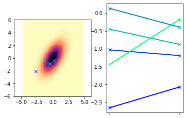
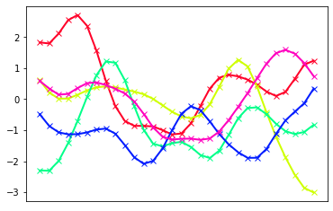
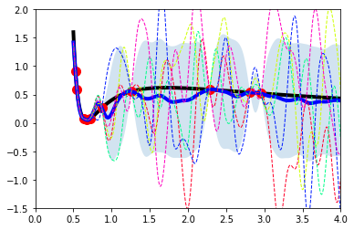
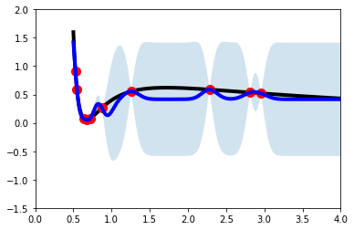
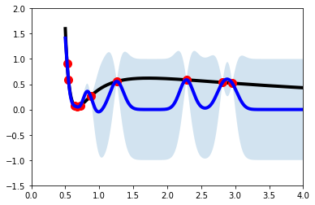
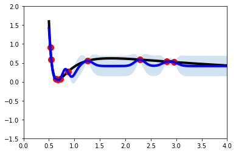
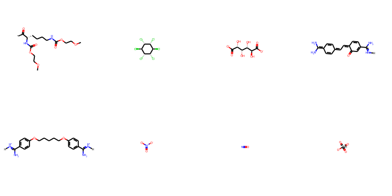
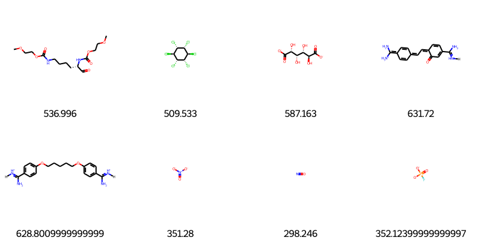
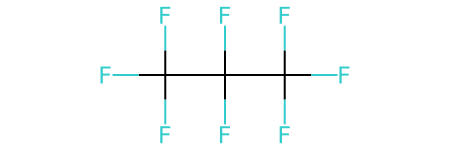
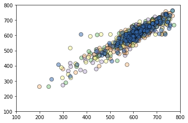

<!DOCTYPE html>
<html class="writer-html5" lang="en" >
<head>
  <meta charset="utf-8" /><meta name="generator" content="Docutils 0.17.1: http://docutils.sourceforge.net/" />

  <meta name="viewport" content="width=device-width, initial-scale=1.0" />
  <title>Day 3 Notebook: Module A Intro &mdash; acsmarm  documentation</title>
      <link rel="stylesheet" href="../_static/pygments.css" type="text/css" />
      <link rel="stylesheet" href="../_static/css/theme.css" type="text/css" />
      <link rel="stylesheet" href="../_static/mystnb.css" type="text/css" />
      <link rel="stylesheet" href="../_static/togglebutton.css" type="text/css" />
  <!--[if lt IE 9]>
    <script src="../_static/js/html5shiv.min.js"></script>
  <![endif]-->
  
        <script data-url_root="../" id="documentation_options" src="../_static/documentation_options.js"></script>
        <script src="../_static/jquery.js"></script>
        <script src="../_static/underscore.js"></script>
        <script src="../_static/doctools.js"></script>
        <script>let toggleHintShow = 'Click to show';</script>
        <script>let toggleHintHide = 'Click to hide';</script>
        <script>let toggleOpenOnPrint = 'true';</script>
        <script src="../_static/togglebutton.js"></script>
        <script>var togglebuttonSelector = '.toggle, .admonition.dropdown, .tag_hide_input div.cell_input, .tag_hide-input div.cell_input, .tag_hide_output div.cell_output, .tag_hide-output div.cell_output, .tag_hide_cell.cell, .tag_hide-cell.cell';</script>
        <script>window.MathJax = {"options": {"processHtmlClass": "tex2jax_process|mathjax_process|math|output_area"}}</script>
        <script defer="defer" src="https://cdn.jsdelivr.net/npm/mathjax@3/es5/tex-mml-chtml.js"></script>
    <script src="../_static/js/theme.js"></script>
    <link rel="index" title="Index" href="../genindex.html" />
    <link rel="search" title="Search" href="../search.html" />
    <link rel="prev" title="Day 3" href="day3.html" /> 
</head>

<body class="wy-body-for-nav"> 
  <div class="wy-grid-for-nav">
    <nav data-toggle="wy-nav-shift" class="wy-nav-side">
      <div class="wy-side-scroll">
        <div class="wy-side-nav-search" >
            <a href="../toc.html" class="icon icon-home"> acsmarm
          </a>
<div role="search">
  <form id="rtd-search-form" class="wy-form" action="../search.html" method="get">
    <input type="text" name="q" placeholder="Search docs" />
    <input type="hidden" name="check_keywords" value="yes" />
    <input type="hidden" name="area" value="default" />
  </form>
</div>
        </div><div class="wy-menu wy-menu-vertical" data-spy="affix" role="navigation" aria-label="Navigation menu">
              <ul class="current">
<li class="toctree-l1"><a class="reference internal" href="../index.html">Materials for ML Workshops at ACS MARM: June 1-4, 2022</a></li>
<li class="toctree-l1"><a class="reference internal" href="../20220601-intro/day1.html">Day 1</a></li>
<li class="toctree-l1"><a class="reference internal" href="../20220601-intro/notebook.html">Day 1 Notebook Intro</a></li>
<li class="toctree-l1"><a class="reference internal" href="../20220601-intro/notebook.html#activity-1-concepts-with-linear-regression">Activity 1: Concepts with Linear Regression</a></li>
<li class="toctree-l1"><a class="reference internal" href="../20220601-intro/notebook.html#activity-2-chemical-data-basics">Activity 2: Chemical Data Basics</a></li>
<li class="toctree-l1"><a class="reference internal" href="../20220601-intro/notebook.html#activity-3-fun-with-neural-networks">Activity 3: Fun with Neural Networks</a></li>
<li class="toctree-l1"><a class="reference internal" href="../20220602-crma/day2.html">Agenda for Day 2</a></li>
<li class="toctree-l1"><a class="reference internal" href="day3.html">Day 3</a></li>
<li class="toctree-l1 current"><a class="current reference internal" href="#">Day 3 Notebook: Module A Intro</a><ul>
<li class="toctree-l2"><a class="reference internal" href="#setup-of-python-environment">Setup of Python Environment</a></li>
</ul>
</li>
<li class="toctree-l1"><a class="reference internal" href="#activity-1-understanding-gaussian-process-regression">Activity 1: Understanding Gaussian Process Regression</a><ul>
<li class="toctree-l2"><a class="reference internal" href="#example-gpr-with-van-der-waals-eos">Example GPR with Van der Waals EOS</a></li>
<li class="toctree-l2"><a class="reference internal" href="#scikit-learn-gpr-implementation">scikit-learn GPR Implementation</a></li>
</ul>
</li>
<li class="toctree-l1"><a class="reference internal" href="#team-activity-active-learning-challenge">Team Activity: Active Learning Challenge</a><ul>
<li class="toctree-l2"><a class="reference internal" href="#pre-processing">Pre-processing</a></li>
<li class="toctree-l2"><a class="reference internal" href="#using-leruli">Using leruli</a></li>
<li class="toctree-l2"><a class="reference internal" href="#gpr-kernel">GPR Kernel</a></li>
<li class="toctree-l2"><a class="reference internal" href="#acquisition-functions">Acquisition functions</a></li>
<li class="toctree-l2"><a class="reference internal" href="#data-preparation-and-target-definition">Data Preparation and Target Definition</a></li>
<li class="toctree-l2"><a class="reference internal" href="#active-learning-loop">Active learning loop</a></li>
<li class="toctree-l2"><a class="reference internal" href="#performance-of-the-gpr-model-during-active-learning">Performance of the GPR model during active learning</a></li>
</ul>
</li>
</ul>

        </div>
      </div>
    </nav>

    <section data-toggle="wy-nav-shift" class="wy-nav-content-wrap"><nav class="wy-nav-top" aria-label="Mobile navigation menu" >
          <i data-toggle="wy-nav-top" class="fa fa-bars"></i>
          <a href="../toc.html">acsmarm</a>
      </nav>

      <div class="wy-nav-content">
        <div class="rst-content">
          <div role="navigation" aria-label="Page navigation">
  <ul class="wy-breadcrumbs">
      <li><a href="../toc.html" class="icon icon-home"></a> &raquo;</li>
      <li>Day 3 Notebook: Module A Intro</li>
      <li class="wy-breadcrumbs-aside">
              <a href="https://github.com/webbtheosim/ml-workshop-acsmarm2022/blob/main/site/source/20220603-applied/notebook-a.ipynb" class="fa fa-github"> Edit on GitHub</a>
      </li>
  </ul>
  <hr/>
</div>
          <div role="main" class="document" itemscope="itemscope" itemtype="http://schema.org/Article">
           <div itemprop="articleBody">
             
  <section class="tex2jax_ignore mathjax_ignore" id="day-3-notebook-module-a-intro">
<h1>Day 3 Notebook: Module A Intro<a class="headerlink" href="#day-3-notebook-module-a-intro" title="Permalink to this headline"></a></h1>
<section id="setup-of-python-environment">
<h2>Setup of Python Environment<a class="headerlink" href="#setup-of-python-environment" title="Permalink to this headline"></a></h2>
<p>For this notebook, we will need a few more modules that are not native to Google Colab. Run the cell below to install these. <code class="docutils literal notranslate"><span class="pre">rdkit</span></code> is a generally useful cheminformatics software. <code class="docutils literal notranslate"><span class="pre">mordred</span></code> is a module that enables calculation of molecular descriptors and pairs well with <code class="docutils literal notranslate"><span class="pre">rdkit</span></code>. <code class="docutils literal notranslate"><span class="pre">leruli</span></code> is a web service that offers real-time structure and property predictions.</p>
<p>During the workshop, you may not actually use <code class="docutils literal notranslate"><span class="pre">mordred</span></code> as the calculation of descriptors (there are ~1500) can take awhile for all the molecular structures, but it is worth checking out.</p>
<div class="cell tag_hide-output docutils container">
<div class="cell_input docutils container">
<div class="highlight-ipython3 notranslate"><div class="highlight"><pre><span></span><span class="o">!</span>pip install rdkit-pypi
<span class="o">!</span>pip install leruli
<span class="o">!</span>pip install <span class="s1">&#39;mordred[full]&#39;</span>
</pre></div>
</div>
</div>
<div class="cell_output docutils container">
<div class="output stream highlight-myst-ansi notranslate"><div class="highlight"><pre><span></span>Requirement already satisfied: rdkit-pypi in /opt/hostedtoolcache/Python/3.8.12/x64/lib/python3.8/site-packages (2022.3.2.1)
Requirement already satisfied: Pillow in /opt/hostedtoolcache/Python/3.8.12/x64/lib/python3.8/site-packages (from rdkit-pypi) (9.1.1)
Requirement already satisfied: numpy in /opt/hostedtoolcache/Python/3.8.12/x64/lib/python3.8/site-packages (from rdkit-pypi) (1.22.4)
</pre></div>
</div>
<div class="output stream highlight-myst-ansi notranslate"><div class="highlight"><pre><span></span>Collecting leruli
</pre></div>
</div>
<div class="output stream highlight-myst-ansi notranslate"><div class="highlight"><pre><span></span>  Downloading leruli-22.1.6-py2.py3-none-any.whl (13 kB)
Requirement already satisfied: Click&gt;=7.0 in /opt/hostedtoolcache/Python/3.8.12/x64/lib/python3.8/site-packages (from leruli) (8.1.3)
</pre></div>
</div>
<div class="output stream highlight-myst-ansi notranslate"><div class="highlight"><pre><span></span>Collecting docker
</pre></div>
</div>
<div class="output stream highlight-myst-ansi notranslate"><div class="highlight"><pre><span></span>  Downloading docker-5.0.3-py2.py3-none-any.whl (146 kB)
?25l     ━━━━━━━━━━━━━━━━━━━━━━━━━━━━━━━━━━━━━━━━ <span class=" -Color -Color-Green">0.0/146.2 kB</span> <span class=" -Color -Color-Red">?</span> eta <span class=" -Color -Color-Cyan">-:--:--</span>
     ━━━━━━━━━━━━━━━━━━━━━━━━━━━━━━━━━━━━━━ <span class=" -Color -Color-Green">146.2/146.2 kB</span> <span class=" -Color -Color-Red">10.7 MB/s</span> eta <span class=" -Color -Color-Cyan">0:00:00</span>
?25h
</pre></div>
</div>
<div class="output stream highlight-myst-ansi notranslate"><div class="highlight"><pre><span></span>Collecting aiohttp
</pre></div>
</div>
<div class="output stream highlight-myst-ansi notranslate"><div class="highlight"><pre><span></span>  Downloading aiohttp-3.8.1-cp38-cp38-manylinux_2_5_x86_64.manylinux1_x86_64.manylinux_2_12_x86_64.manylinux2010_x86_64.whl (1.3 MB)
?25l     ━━━━━━━━━━━━━━━━━━━━━━━━━━━━━━━━━━━━━━━━ <span class=" -Color -Color-Green">0.0/1.3 MB</span> <span class=" -Color -Color-Red">?</span> eta <span class=" -Color -Color-Cyan">-:--:--</span>
     ━━━━━━━━━━━╺━━━━━━━━━━━━━━━━━━━━━━━━━━━━ <span class=" -Color -Color-Green">0.3/1.3 MB</span> <span class=" -Color -Color-Red">10.2 MB/s</span> eta <span class=" -Color -Color-Cyan">0:00:01</span>
</pre></div>
</div>
<div class="output stream highlight-myst-ansi notranslate"><div class="highlight"><pre><span></span>     ━━━━━━━━━━━━━━━━━━━━━━━━━━━━━━━━━━━━━━━━ <span class=" -Color -Color-Green">1.3/1.3 MB</span> <span class=" -Color -Color-Red">22.9 MB/s</span> eta <span class=" -Color -Color-Cyan">0:00:00</span>
?25hRequirement already satisfied: requests in /opt/hostedtoolcache/Python/3.8.12/x64/lib/python3.8/site-packages (from leruli) (2.27.1)
</pre></div>
</div>
<div class="output stream highlight-myst-ansi notranslate"><div class="highlight"><pre><span></span>Collecting aiobotocore
</pre></div>
</div>
<div class="output stream highlight-myst-ansi notranslate"><div class="highlight"><pre><span></span>  Downloading aiobotocore-2.3.2.tar.gz (104 kB)
?25l     ━━━━━━━━━━━━━━━━━━━━━━━━━━━━━━━━━━━━━━━━ <span class=" -Color -Color-Green">0.0/104.8 kB</span> <span class=" -Color -Color-Red">?</span> eta <span class=" -Color -Color-Cyan">-:--:--</span>
     ━━━━━━━━━━━━━━━━━━━━━━━━━━━━━━━━━━━━━━ <span class=" -Color -Color-Green">104.8/104.8 kB</span> <span class=" -Color -Color-Red">21.7 MB/s</span> eta <span class=" -Color -Color-Cyan">0:00:00</span>
?25h
</pre></div>
</div>
<div class="output stream highlight-myst-ansi notranslate"><div class="highlight"><pre><span></span>  Preparing metadata (setup.py) ... ?25l-
</pre></div>
</div>
<div class="output stream highlight-myst-ansi notranslate"><div class="highlight"><pre><span></span> done
</pre></div>
</div>
<div class="output stream highlight-myst-ansi notranslate"><div class="highlight"><pre><span></span>?25hCollecting tqdm&gt;=4.62.0
  Downloading tqdm-4.64.0-py2.py3-none-any.whl (78 kB)
?25l     ━━━━━━━━━━━━━━━━━━━━━━━━━━━━━━━━━━━━━━━━ <span class=" -Color -Color-Green">0.0/78.4 kB</span> <span class=" -Color -Color-Red">?</span> eta <span class=" -Color -Color-Cyan">-:--:--</span>
     ━━━━━━━━━━━━━━━━━━━━━━━━━━━━━━━━━━━━━━━━ <span class=" -Color -Color-Green">78.4/78.4 kB</span> <span class=" -Color -Color-Red">18.4 MB/s</span> eta <span class=" -Color -Color-Cyan">0:00:00</span>
?25h
</pre></div>
</div>
<div class="output stream highlight-myst-ansi notranslate"><div class="highlight"><pre><span></span>Requirement already satisfied: tabulate in /opt/hostedtoolcache/Python/3.8.12/x64/lib/python3.8/site-packages (from leruli) (0.8.9)
</pre></div>
</div>
<div class="output stream highlight-myst-ansi notranslate"><div class="highlight"><pre><span></span>Collecting minio
</pre></div>
</div>
<div class="output stream highlight-myst-ansi notranslate"><div class="highlight"><pre><span></span>  Downloading minio-7.1.8-py3-none-any.whl (75 kB)
?25l     ━━━━━━━━━━━━━━━━━━━━━━━━━━━━━━━━━━━━━━━━ <span class=" -Color -Color-Green">0.0/75.9 kB</span> <span class=" -Color -Color-Red">?</span> eta <span class=" -Color -Color-Cyan">-:--:--</span>
     ━━━━━━━━━━━━━━━━━━━━━━━━━━━━━━━━━━━━━━━━ <span class=" -Color -Color-Green">75.9/75.9 kB</span> <span class=" -Color -Color-Red">18.7 MB/s</span> eta <span class=" -Color -Color-Cyan">0:00:00</span>
?25h
</pre></div>
</div>
<div class="output stream highlight-myst-ansi notranslate"><div class="highlight"><pre><span></span>Collecting botocore&lt;1.24.22,&gt;=1.24.21
</pre></div>
</div>
<div class="output stream highlight-myst-ansi notranslate"><div class="highlight"><pre><span></span>  Downloading botocore-1.24.21-py3-none-any.whl (8.6 MB)
?25l     ━━━━━━━━━━━━━━━━━━━━━━━━━━━━━━━━━━━━━━━━ <span class=" -Color -Color-Green">0.0/8.6 MB</span> <span class=" -Color -Color-Red">?</span> eta <span class=" -Color -Color-Cyan">-:--:--</span>
</pre></div>
</div>
<div class="output stream highlight-myst-ansi notranslate"><div class="highlight"><pre><span></span>     ━━━━━━━━━━━╸━━━━━━━━━━━━━━━━━━━━━━━━━━━━ <span class=" -Color -Color-Green">2.5/8.6 MB</span> <span class=" -Color -Color-Red">88.1 MB/s</span> eta <span class=" -Color -Color-Cyan">0:00:01</span>
     ━━━━━━━━━━━━━━━━━━━━━━━━━━╸━━━━━━━━━━━━━ <span class=" -Color -Color-Green">5.7/8.6 MB</span> <span class=" -Color -Color-Red">89.4 MB/s</span> eta <span class=" -Color -Color-Cyan">0:00:01</span>
</pre></div>
</div>
<div class="output stream highlight-myst-ansi notranslate"><div class="highlight"><pre><span></span>     ━━━━━━━━━━━━━━━━━━━━━━━━━━━━━━━━━━━━━━━╸ <span class=" -Color -Color-Green">8.6/8.6 MB</span> <span class=" -Color -Color-Red">95.6 MB/s</span> eta <span class=" -Color -Color-Cyan">0:00:01</span>
</pre></div>
</div>
<div class="output stream highlight-myst-ansi notranslate"><div class="highlight"><pre><span></span>     ━━━━━━━━━━━━━━━━━━━━━━━━━━━━━━━━━━━━━━━━ <span class=" -Color -Color-Green">8.6/8.6 MB</span> <span class=" -Color -Color-Red">67.6 MB/s</span> eta <span class=" -Color -Color-Cyan">0:00:00</span>
?25h
</pre></div>
</div>
<div class="output stream highlight-myst-ansi notranslate"><div class="highlight"><pre><span></span>Collecting wrapt&gt;=1.10.10
</pre></div>
</div>
<div class="output stream highlight-myst-ansi notranslate"><div class="highlight"><pre><span></span>  Downloading wrapt-1.14.1-cp38-cp38-manylinux_2_5_x86_64.manylinux1_x86_64.manylinux_2_17_x86_64.manylinux2014_x86_64.whl (81 kB)
?25l     ━━━━━━━━━━━━━━━━━━━━━━━━━━━━━━━━━━━━━━━━ <span class=" -Color -Color-Green">0.0/81.0 kB</span> <span class=" -Color -Color-Red">?</span> eta <span class=" -Color -Color-Cyan">-:--:--</span>
     ━━━━━━━━━━━━━━━━━━━━━━━━━━━━━━━━━━━━━━━━ <span class=" -Color -Color-Green">81.0/81.0 kB</span> <span class=" -Color -Color-Red">12.8 MB/s</span> eta <span class=" -Color -Color-Cyan">0:00:00</span>
?25hCollecting aioitertools&gt;=0.5.1
</pre></div>
</div>
<div class="output stream highlight-myst-ansi notranslate"><div class="highlight"><pre><span></span>  Downloading aioitertools-0.10.0-py3-none-any.whl (23 kB)
</pre></div>
</div>
<div class="output stream highlight-myst-ansi notranslate"><div class="highlight"><pre><span></span>Collecting async-timeout&lt;5.0,&gt;=4.0.0a3
  Downloading async_timeout-4.0.2-py3-none-any.whl (5.8 kB)
</pre></div>
</div>
<div class="output stream highlight-myst-ansi notranslate"><div class="highlight"><pre><span></span>Collecting multidict&lt;7.0,&gt;=4.5
  Downloading multidict-6.0.2-cp38-cp38-manylinux_2_17_x86_64.manylinux2014_x86_64.whl (121 kB)
?25l     ━━━━━━━━━━━━━━━━━━━━━━━━━━━━━━━━━━━━━━━━ <span class=" -Color -Color-Green">0.0/121.3 kB</span> <span class=" -Color -Color-Red">?</span> eta <span class=" -Color -Color-Cyan">-:--:--</span>
     ━━━━━━━━━━━━━━━━━━━━━━━━━━━━━━━━━━━━━━ <span class=" -Color -Color-Green">121.3/121.3 kB</span> <span class=" -Color -Color-Red">28.2 MB/s</span> eta <span class=" -Color -Color-Cyan">0:00:00</span>
?25h
</pre></div>
</div>
<div class="output stream highlight-myst-ansi notranslate"><div class="highlight"><pre><span></span>Collecting yarl&lt;2.0,&gt;=1.0
</pre></div>
</div>
<div class="output stream highlight-myst-ansi notranslate"><div class="highlight"><pre><span></span>  Downloading yarl-1.7.2-cp38-cp38-manylinux_2_5_x86_64.manylinux1_x86_64.manylinux_2_12_x86_64.manylinux2010_x86_64.whl (308 kB)
?25l     ━━━━━━━━━━━━━━━━━━━━━━━━━━━━━━━━━━━━━━━━ <span class=" -Color -Color-Green">0.0/308.6 kB</span> <span class=" -Color -Color-Red">?</span> eta <span class=" -Color -Color-Cyan">-:--:--</span>
     ━━━━━━━━━━━━━━━━━━━━━━━━━━━━━━━━━━━━━━ <span class=" -Color -Color-Green">308.6/308.6 kB</span> <span class=" -Color -Color-Red">51.1 MB/s</span> eta <span class=" -Color -Color-Cyan">0:00:00</span>
?25h
</pre></div>
</div>
<div class="output stream highlight-myst-ansi notranslate"><div class="highlight"><pre><span></span>Collecting frozenlist&gt;=1.1.1
  Downloading frozenlist-1.3.0-cp38-cp38-manylinux_2_5_x86_64.manylinux1_x86_64.manylinux_2_17_x86_64.manylinux2014_x86_64.whl (158 kB)
?25l     ━━━━━━━━━━━━━━━━━━━━━━━━━━━━━━━━━━━━━━━━ <span class=" -Color -Color-Green">0.0/158.7 kB</span> <span class=" -Color -Color-Red">?</span> eta <span class=" -Color -Color-Cyan">-:--:--</span>
     ━━━━━━━━━━━━━━━━━━━━━━━━━━━━━━━━━━━━━━ <span class=" -Color -Color-Green">158.7/158.7 kB</span> <span class=" -Color -Color-Red">35.6 MB/s</span> eta <span class=" -Color -Color-Cyan">0:00:00</span>
?25h
</pre></div>
</div>
<div class="output stream highlight-myst-ansi notranslate"><div class="highlight"><pre><span></span>Collecting aiosignal&gt;=1.1.2
  Downloading aiosignal-1.2.0-py3-none-any.whl (8.2 kB)
Requirement already satisfied: attrs&gt;=17.3.0 in /opt/hostedtoolcache/Python/3.8.12/x64/lib/python3.8/site-packages (from aiohttp-&gt;leruli) (21.4.0)
Requirement already satisfied: charset-normalizer&lt;3.0,&gt;=2.0 in /opt/hostedtoolcache/Python/3.8.12/x64/lib/python3.8/site-packages (from aiohttp-&gt;leruli) (2.0.12)
</pre></div>
</div>
<div class="output stream highlight-myst-ansi notranslate"><div class="highlight"><pre><span></span>Collecting websocket-client&gt;=0.32.0
</pre></div>
</div>
<div class="output stream highlight-myst-ansi notranslate"><div class="highlight"><pre><span></span>  Downloading websocket_client-1.3.2-py3-none-any.whl (54 kB)
?25l     ━━━━━━━━━━━━━━━━━━━━━━━━━━━━━━━━━━━━━━━━ <span class=" -Color -Color-Green">0.0/54.3 kB</span> <span class=" -Color -Color-Red">?</span> eta <span class=" -Color -Color-Cyan">-:--:--</span>
     ━━━━━━━━━━━━━━━━━━━━━━━━━━━━━━━━━━━━━━━━ <span class=" -Color -Color-Green">54.3/54.3 kB</span> <span class=" -Color -Color-Red">15.4 MB/s</span> eta <span class=" -Color -Color-Cyan">0:00:00</span>
?25hRequirement already satisfied: certifi&gt;=2017.4.17 in /opt/hostedtoolcache/Python/3.8.12/x64/lib/python3.8/site-packages (from requests-&gt;leruli) (2022.5.18.1)
Requirement already satisfied: urllib3&lt;1.27,&gt;=1.21.1 in /opt/hostedtoolcache/Python/3.8.12/x64/lib/python3.8/site-packages (from requests-&gt;leruli) (1.26.9)
Requirement already satisfied: idna&lt;4,&gt;=2.5 in /opt/hostedtoolcache/Python/3.8.12/x64/lib/python3.8/site-packages (from requests-&gt;leruli) (3.3)
</pre></div>
</div>
<div class="output stream highlight-myst-ansi notranslate"><div class="highlight"><pre><span></span>Requirement already satisfied: typing_extensions&gt;=4.0 in /opt/hostedtoolcache/Python/3.8.12/x64/lib/python3.8/site-packages (from aioitertools&gt;=0.5.1-&gt;aiobotocore-&gt;leruli) (4.2.0)
</pre></div>
</div>
<div class="output stream highlight-myst-ansi notranslate"><div class="highlight"><pre><span></span>Collecting jmespath&lt;2.0.0,&gt;=0.7.1
</pre></div>
</div>
<div class="output stream highlight-myst-ansi notranslate"><div class="highlight"><pre><span></span>  Downloading jmespath-1.0.0-py3-none-any.whl (23 kB)
Requirement already satisfied: python-dateutil&lt;3.0.0,&gt;=2.1 in /opt/hostedtoolcache/Python/3.8.12/x64/lib/python3.8/site-packages (from botocore&lt;1.24.22,&gt;=1.24.21-&gt;aiobotocore-&gt;leruli) (2.8.2)
</pre></div>
</div>
<div class="output stream highlight-myst-ansi notranslate"><div class="highlight"><pre><span></span>Requirement already satisfied: six&gt;=1.5 in /opt/hostedtoolcache/Python/3.8.12/x64/lib/python3.8/site-packages (from python-dateutil&lt;3.0.0,&gt;=2.1-&gt;botocore&lt;1.24.22,&gt;=1.24.21-&gt;aiobotocore-&gt;leruli) (1.16.0)
Building wheels for collected packages: aiobotocore
</pre></div>
</div>
<div class="output stream highlight-myst-ansi notranslate"><div class="highlight"><pre><span></span>  Building wheel for aiobotocore (setup.py) ... ?25l-
</pre></div>
</div>
<div class="output stream highlight-myst-ansi notranslate"><div class="highlight"><pre><span></span> \
</pre></div>
</div>
<div class="output stream highlight-myst-ansi notranslate"><div class="highlight"><pre><span></span> done
?25h  Created wheel for aiobotocore: filename=aiobotocore-2.3.2-py3-none-any.whl size=111105 sha256=4859505657681d930713e6b29c98aa89be3101cf0490bcf0e7af4f5e1ccc5ff0
  Stored in directory: /home/runner/.cache/pip/wheels/a8/3e/17/5739e2e58ff33991e6e89c90880e843bf4fa04fceadb1f4fd8
Successfully built aiobotocore
</pre></div>
</div>
<div class="output stream highlight-myst-ansi notranslate"><div class="highlight"><pre><span></span>Installing collected packages: wrapt, websocket-client, tqdm, multidict, minio, jmespath, frozenlist, async-timeout, aioitertools, yarl, docker, botocore, aiosignal, aiohttp, aiobotocore, leruli
</pre></div>
</div>
<div class="output stream highlight-myst-ansi notranslate"><div class="highlight"><pre><span></span>Successfully installed aiobotocore-2.3.2 aiohttp-3.8.1 aioitertools-0.10.0 aiosignal-1.2.0 async-timeout-4.0.2 botocore-1.24.21 docker-5.0.3 frozenlist-1.3.0 jmespath-1.0.0 leruli-22.1.6 minio-7.1.8 multidict-6.0.2 tqdm-4.64.0 websocket-client-1.3.2 wrapt-1.14.1 yarl-1.7.2
</pre></div>
</div>
<div class="output stream highlight-myst-ansi notranslate"><div class="highlight"><pre><span></span>Collecting mordred[full]
</pre></div>
</div>
<div class="output stream highlight-myst-ansi notranslate"><div class="highlight"><pre><span></span>  Downloading mordred-1.2.0.tar.gz (128 kB)
?25l     ━━━━━━━━━━━━━━━━━━━━━━━━━━━━━━━━━━━━━━━━ <span class=" -Color -Color-Green">0.0/128.8 kB</span> <span class=" -Color -Color-Red">?</span> eta <span class=" -Color -Color-Cyan">-:--:--</span>
</pre></div>
</div>
<div class="output stream highlight-myst-ansi notranslate"><div class="highlight"><pre><span></span>     ━━━━━━━━━━━━━━━━━━━━━━━━━━━━━━━━━━━━━━━ <span class=" -Color -Color-Green">128.8/128.8 kB</span> <span class=" -Color -Color-Red">7.3 MB/s</span> eta <span class=" -Color -Color-Cyan">0:00:00</span>
?25h
</pre></div>
</div>
<div class="output stream highlight-myst-ansi notranslate"><div class="highlight"><pre><span></span>  Preparing metadata (setup.py) ... ?25l-
</pre></div>
</div>
<div class="output stream highlight-myst-ansi notranslate"><div class="highlight"><pre><span></span> done
?25hRequirement already satisfied: six==1.* in /opt/hostedtoolcache/Python/3.8.12/x64/lib/python3.8/site-packages (from mordred[full]) (1.16.0)
Requirement already satisfied: numpy==1.* in /opt/hostedtoolcache/Python/3.8.12/x64/lib/python3.8/site-packages (from mordred[full]) (1.22.4)
</pre></div>
</div>
<div class="output stream highlight-myst-ansi notranslate"><div class="highlight"><pre><span></span>Collecting networkx==2.*
</pre></div>
</div>
<div class="output stream highlight-myst-ansi notranslate"><div class="highlight"><pre><span></span>  Downloading networkx-2.8.2-py3-none-any.whl (2.0 MB)
?25l     ━━━━━━━━━━━━━━━━━━━━━━━━━━━━━━━━━━━━━━━━ <span class=" -Color -Color-Green">0.0/2.0 MB</span> <span class=" -Color -Color-Red">?</span> eta <span class=" -Color -Color-Cyan">-:--:--</span>
</pre></div>
</div>
<div class="output stream highlight-myst-ansi notranslate"><div class="highlight"><pre><span></span>     ━━━━━━━━━━━━━━━━━━━━━━━━━━━━━━━━━━━━━━━╸ <span class=" -Color -Color-Green">2.0/2.0 MB</span> <span class=" -Color -Color-Red">60.6 MB/s</span> eta <span class=" -Color -Color-Cyan">0:00:01</span>
     ━━━━━━━━━━━━━━━━━━━━━━━━━━━━━━━━━━━━━━━━ <span class=" -Color -Color-Green">2.0/2.0 MB</span> <span class=" -Color -Color-Red">43.8 MB/s</span> eta <span class=" -Color -Color-Cyan">0:00:00</span>
?25h
</pre></div>
</div>
<div class="output stream highlight-myst-ansi notranslate"><div class="highlight"><pre><span></span>Collecting pandas
</pre></div>
</div>
<div class="output stream highlight-myst-ansi notranslate"><div class="highlight"><pre><span></span>  Downloading pandas-1.4.2-cp38-cp38-manylinux_2_17_x86_64.manylinux2014_x86_64.whl (11.7 MB)
?25l     ━━━━━━━━━━━━━━━━━━━━━━━━━━━━━━━━━━━━━━━━ <span class=" -Color -Color-Green">0.0/11.7 MB</span> <span class=" -Color -Color-Red">?</span> eta <span class=" -Color -Color-Cyan">-:--:--</span>
</pre></div>
</div>
<div class="output stream highlight-myst-ansi notranslate"><div class="highlight"><pre><span></span>     ╸━━━━━━━━━━━━━━━━━━━━━━━━━━━━━━━━━━━━━━━ <span class=" -Color -Color-Green">0.3/11.7 MB</span> <span class=" -Color -Color-Red">7.4 MB/s</span> eta <span class=" -Color -Color-Cyan">0:00:02</span>
     ━━━━━━━━╸━━━━━━━━━━━━━━━━━━━━━━━━━━━━━━━ <span class=" -Color -Color-Green">2.5/11.7 MB</span> <span class=" -Color -Color-Red">36.6 MB/s</span> eta <span class=" -Color -Color-Cyan">0:00:01</span>
</pre></div>
</div>
<div class="output stream highlight-myst-ansi notranslate"><div class="highlight"><pre><span></span>     ━━━━━━━━━━━━━━━━━━━━╺━━━━━━━━━━━━━━━━━━━ <span class=" -Color -Color-Green">6.0/11.7 MB</span> <span class=" -Color -Color-Red">56.9 MB/s</span> eta <span class=" -Color -Color-Cyan">0:00:01</span>
</pre></div>
</div>
<div class="output stream highlight-myst-ansi notranslate"><div class="highlight"><pre><span></span>     ━━━━━━━━━━━━━━━━━━━━━━━━━━━━━━━━━╸━━━━━━ <span class=" -Color -Color-Green">9.8/11.7 MB</span> <span class=" -Color -Color-Red">69.6 MB/s</span> eta <span class=" -Color -Color-Cyan">0:00:01</span>
     ━━━━━━━━━━━━━━━━━━━━━━━━━━━━━━━━━━━━━━╸ <span class=" -Color -Color-Green">11.7/11.7 MB</span> <span class=" -Color -Color-Red">103.8 MB/s</span> eta <span class=" -Color -Color-Cyan">0:00:01</span>
</pre></div>
</div>
<div class="output stream highlight-myst-ansi notranslate"><div class="highlight"><pre><span></span>     ━━━━━━━━━━━━━━━━━━━━━━━━━━━━━━━━━━━━━━━━ <span class=" -Color -Color-Green">11.7/11.7 MB</span> <span class=" -Color -Color-Red">69.8 MB/s</span> eta <span class=" -Color -Color-Cyan">0:00:00</span>
?25h
</pre></div>
</div>
<div class="output stream highlight-myst-ansi notranslate"><div class="highlight"><pre><span></span>Requirement already satisfied: tqdm in /opt/hostedtoolcache/Python/3.8.12/x64/lib/python3.8/site-packages (from mordred[full]) (4.64.0)
</pre></div>
</div>
<div class="output stream highlight-myst-ansi notranslate"><div class="highlight"><pre><span></span>Requirement already satisfied: pytz&gt;=2020.1 in /opt/hostedtoolcache/Python/3.8.12/x64/lib/python3.8/site-packages (from pandas-&gt;mordred[full]) (2022.1)
Requirement already satisfied: python-dateutil&gt;=2.8.1 in /opt/hostedtoolcache/Python/3.8.12/x64/lib/python3.8/site-packages (from pandas-&gt;mordred[full]) (2.8.2)
Building wheels for collected packages: mordred
</pre></div>
</div>
<div class="output stream highlight-myst-ansi notranslate"><div class="highlight"><pre><span></span>  Building wheel for mordred (setup.py) ... ?25l-
</pre></div>
</div>
<div class="output stream highlight-myst-ansi notranslate"><div class="highlight"><pre><span></span> \
</pre></div>
</div>
<div class="output stream highlight-myst-ansi notranslate"><div class="highlight"><pre><span></span> done
?25h  Created wheel for mordred: filename=mordred-1.2.0-py3-none-any.whl size=176722 sha256=b7107860a10fdc78a346772dfa0b2007e4abb3167695267e1dad93bd82b7f8c0
  Stored in directory: /home/runner/.cache/pip/wheels/20/88/41/5d873c9b55dc7479f0b9951c2161d7b09be193e7228ea27309
Successfully built mordred
</pre></div>
</div>
<div class="output stream highlight-myst-ansi notranslate"><div class="highlight"><pre><span></span>Installing collected packages: networkx, pandas, mordred
</pre></div>
</div>
<div class="output stream highlight-myst-ansi notranslate"><div class="highlight"><pre><span></span>Successfully installed mordred-1.2.0 networkx-2.8.2 pandas-1.4.2
</pre></div>
</div>
</div>
</div>
<div class="cell docutils container">
<div class="cell_input docutils container">
<div class="highlight-ipython3 notranslate"><div class="highlight"><pre><span></span><span class="c1"># Modules</span>
<span class="kn">import</span> <span class="nn">numpy</span> <span class="k">as</span> <span class="nn">np</span>
<span class="kn">import</span> <span class="nn">matplotlib.pyplot</span> <span class="k">as</span> <span class="nn">plt</span>
<span class="kn">from</span> <span class="nn">scipy.spatial.distance</span> <span class="kn">import</span> <span class="n">cdist</span>
<span class="kn">from</span> <span class="nn">sklearn.gaussian_process.kernels</span> <span class="kn">import</span> <span class="n">RBF</span>
<span class="kn">from</span> <span class="nn">sklearn.gaussian_process</span>   <span class="kn">import</span> <span class="n">GaussianProcessRegressor</span>
<span class="kn">from</span> <span class="nn">sklearn</span> <span class="kn">import</span> <span class="n">preprocessing</span>
<span class="kn">import</span> <span class="nn">pandas</span> <span class="k">as</span> <span class="nn">pd</span>
<span class="kn">from</span> <span class="nn">rdkit</span> <span class="kn">import</span> <span class="n">Chem</span>
<span class="kn">from</span> <span class="nn">rdkit.Chem</span> <span class="kn">import</span> <span class="n">PandasTools</span> <span class="k">as</span> <span class="n">PT</span>
<span class="kn">from</span> <span class="nn">mordred</span> <span class="kn">import</span> <span class="n">Calculator</span><span class="p">,</span> <span class="n">descriptors</span>
<span class="kn">from</span> <span class="nn">mordred.error</span> <span class="kn">import</span> <span class="n">Missing</span>
</pre></div>
</div>
</div>
<div class="cell_output docutils container">
<div class="output traceback highlight-ipythontb notranslate"><div class="highlight"><pre><span></span><span class="gt">---------------------------------------------------------------------------</span>
<span class="ne">ModuleNotFoundError</span><span class="g g-Whitespace">                       </span>Traceback (most recent call last)
<span class="nn">Input In [2],</span> in <span class="ni">&lt;cell line: 3&gt;</span><span class="nt">()</span>
<span class="g g-Whitespace">      </span><span class="mi">1</span> <span class="c1"># Modules</span>
<span class="g g-Whitespace">      </span><span class="mi">2</span> <span class="kn">import</span> <span class="nn">numpy</span> <span class="k">as</span> <span class="nn">np</span>
<span class="ne">----&gt; </span><span class="mi">3</span> <span class="kn">import</span> <span class="nn">matplotlib.pyplot</span> <span class="k">as</span> <span class="nn">plt</span>
<span class="g g-Whitespace">      </span><span class="mi">4</span> <span class="kn">from</span> <span class="nn">scipy.spatial.distance</span> <span class="kn">import</span> <span class="n">cdist</span>
<span class="g g-Whitespace">      </span><span class="mi">5</span> <span class="kn">from</span> <span class="nn">sklearn.gaussian_process.kernels</span> <span class="kn">import</span> <span class="n">RBF</span>

<span class="ne">ModuleNotFoundError</span>: No module named &#39;matplotlib&#39;
</pre></div>
</div>
</div>
</div>
</section>
</section>
<section class="tex2jax_ignore mathjax_ignore" id="activity-1-understanding-gaussian-process-regression">
<h1>Activity 1: Understanding Gaussian Process Regression<a class="headerlink" href="#activity-1-understanding-gaussian-process-regression" title="Permalink to this headline"></a></h1>
<p>First, let’s build some intuition surrounding GPR. We will start by considering <em>Multivariate Gaussians</em>, which can be used to describe a set of normally distributed and possibly correlated random variables. Use the cell below to draw a small number of random samples for a two-dimensional Gaussian. We will then plot these random samples in two ways.</p>
<div class="cell docutils container">
<div class="cell_input docutils container">
<div class="highlight-ipython3 notranslate"><div class="highlight"><pre><span></span><span class="n">rng</span> <span class="o">=</span> <span class="n">np</span><span class="o">.</span><span class="n">random</span><span class="o">.</span><span class="n">default_rng</span><span class="p">()</span> <span class="c1"># sets up a random number generator</span>
<span class="n">ndim</span><span class="o">=</span> <span class="mi">2</span>
<span class="n">nsamples</span> <span class="o">=</span> <span class="mi">5</span>

<span class="c1"># define the distribution and draw samples</span>
<span class="n">mean</span><span class="o">=</span><span class="n">np</span><span class="o">.</span><span class="n">zeros</span><span class="p">(</span><span class="n">ndim</span><span class="p">)</span> <span class="c1"># zero mean</span>
<span class="n">cov</span> <span class="o">=</span><span class="n">np</span><span class="o">.</span><span class="n">array</span><span class="p">([[</span><span class="mi">1</span><span class="p">,</span><span class="mf">0.8</span><span class="p">],[</span><span class="mf">0.8</span><span class="p">,</span><span class="mi">2</span><span class="p">]])</span> <span class="c1"># some covariance matrix with correlation present</span>
<span class="n">samples</span> <span class="o">=</span> <span class="n">rng</span><span class="o">.</span><span class="n">multivariate_normal</span><span class="p">(</span><span class="n">mean</span><span class="p">,</span><span class="n">cov</span><span class="p">,</span><span class="n">nsamples</span><span class="p">)</span>

<span class="c1"># for reference, we will generate a ton of samples to visualize the &quot;true&quot; distribution</span>
<span class="n">x1t</span><span class="p">,</span><span class="n">x2t</span> <span class="o">=</span> <span class="n">rng</span><span class="o">.</span><span class="n">multivariate_normal</span><span class="p">(</span><span class="n">mean</span><span class="p">,</span><span class="n">cov</span><span class="p">,</span><span class="mi">1000000</span><span class="p">)</span><span class="o">.</span><span class="n">T</span>
<span class="n">fig</span><span class="p">,</span><span class="n">ax</span> <span class="o">=</span> <span class="n">plt</span><span class="o">.</span><span class="n">subplots</span><span class="p">(</span><span class="mi">1</span><span class="p">,</span><span class="mi">2</span><span class="p">)</span>
<span class="n">ax</span><span class="p">[</span><span class="mi">0</span><span class="p">]</span><span class="o">.</span><span class="n">hist2d</span><span class="p">(</span><span class="n">x1t</span><span class="p">,</span><span class="n">x2t</span><span class="p">,</span><span class="n">bins</span><span class="o">=</span><span class="p">(</span><span class="mi">100</span><span class="p">,</span><span class="mi">100</span><span class="p">),</span><span class="n">cmap</span><span class="o">=</span><span class="n">plt</span><span class="o">.</span><span class="n">cm</span><span class="o">.</span><span class="n">magma_r</span><span class="p">)</span>

<span class="c1"># and we will overlay our samples on top of this</span>
<span class="n">mycmap</span> <span class="o">=</span> <span class="n">plt</span><span class="o">.</span><span class="n">cm</span><span class="o">.</span><span class="n">get_cmap</span><span class="p">(</span><span class="s1">&#39;winter&#39;</span><span class="p">,</span><span class="n">nsamples</span><span class="p">)</span>
<span class="n">myColors</span> <span class="o">=</span> <span class="p">[</span><span class="n">mycmap</span><span class="p">(</span><span class="n">i</span><span class="o">/</span><span class="p">(</span><span class="n">nsamples</span><span class="o">-</span><span class="mf">1.</span><span class="p">))</span> <span class="k">for</span> <span class="n">i</span> <span class="ow">in</span> <span class="nb">range</span><span class="p">(</span><span class="n">nsamples</span><span class="p">)]</span>
<span class="k">for</span> <span class="n">i</span><span class="p">,</span><span class="n">sample</span> <span class="ow">in</span> <span class="nb">enumerate</span><span class="p">(</span><span class="n">samples</span><span class="p">):</span>
  <span class="n">ax</span><span class="p">[</span><span class="mi">0</span><span class="p">]</span><span class="o">.</span><span class="n">plot</span><span class="p">(</span><span class="n">sample</span><span class="p">[</span><span class="mi">0</span><span class="p">],</span><span class="n">sample</span><span class="p">[</span><span class="mi">1</span><span class="p">],</span><span class="n">linestyle</span> <span class="o">=</span> <span class="s1">&#39;none&#39;</span><span class="p">,</span> <span class="n">marker</span> <span class="o">=</span> <span class="s1">&#39;x&#39;</span><span class="p">,</span> <span class="n">color</span> <span class="o">=</span> <span class="n">myColors</span><span class="p">[</span><span class="n">i</span><span class="p">],</span><span class="n">linewidth</span><span class="o">=</span><span class="mi">5</span> <span class="p">)</span>
<span class="n">ax</span><span class="p">[</span><span class="mi">0</span><span class="p">]</span><span class="o">.</span><span class="n">axis</span><span class="p">(</span><span class="s1">&#39;square&#39;</span><span class="p">)</span>
<span class="n">ax</span><span class="p">[</span><span class="mi">0</span><span class="p">]</span><span class="o">.</span><span class="n">set_xlim</span><span class="p">([</span><span class="o">-</span><span class="mi">6</span><span class="p">,</span><span class="mi">6</span><span class="p">])</span>
<span class="n">ax</span><span class="p">[</span><span class="mi">0</span><span class="p">]</span><span class="o">.</span><span class="n">set_ylim</span><span class="p">([</span><span class="o">-</span><span class="mi">6</span><span class="p">,</span><span class="mi">6</span><span class="p">])</span>

<span class="c1"># Now we will also represent these same draws by plotting them </span>
<span class="c1"># as lines connecting the two Gaussian vectors</span>
<span class="n">xrvs</span> <span class="o">=</span> <span class="p">[</span><span class="n">dim</span><span class="o">/</span><span class="p">(</span><span class="n">ndim</span><span class="o">-</span><span class="mf">1.</span><span class="p">)</span> <span class="k">for</span> <span class="n">dim</span> <span class="ow">in</span> <span class="nb">range</span><span class="p">(</span><span class="n">ndim</span><span class="p">)]</span>
<span class="k">for</span> <span class="n">i</span><span class="p">,</span><span class="n">sample</span> <span class="ow">in</span> <span class="nb">enumerate</span><span class="p">(</span><span class="n">samples</span><span class="p">):</span>
    <span class="n">ax</span><span class="p">[</span><span class="mi">1</span><span class="p">]</span><span class="o">.</span><span class="n">plot</span><span class="p">(</span><span class="n">xrvs</span><span class="p">,</span><span class="n">sample</span><span class="p">,</span><span class="n">linestyle</span><span class="o">=</span><span class="s1">&#39;-&#39;</span><span class="p">,</span><span class="n">marker</span> <span class="o">=</span> <span class="s1">&#39;x&#39;</span><span class="p">,</span><span class="n">color</span><span class="o">=</span><span class="n">myColors</span><span class="p">[</span><span class="n">i</span><span class="p">],</span><span class="n">linewidth</span><span class="o">=</span><span class="mi">2</span><span class="p">)</span>
<span class="n">ax</span><span class="p">[</span><span class="mi">1</span><span class="p">]</span><span class="o">.</span><span class="n">xaxis</span><span class="o">.</span><span class="n">set_ticks</span><span class="p">(</span><span class="n">xrvs</span><span class="p">)</span>
<span class="n">ax</span><span class="p">[</span><span class="mi">1</span><span class="p">]</span><span class="o">.</span><span class="n">xaxis</span><span class="o">.</span><span class="n">set_ticklabels</span><span class="p">([])</span>    
<span class="n">plt</span><span class="o">.</span><span class="n">show</span><span class="p">()</span>
</pre></div>
</div>
</div>
<div class="cell_output docutils container">

</div>
</div>
<p>Now, we let’s consider more complex situation: a <em>30-dimensional</em> Gaussian. Of course, we will not show the underlying distribution but use the “line view” to illustrate the samples. We will choose to represent the covariance as
$<span class="math notranslate nohighlight">\(k(x_i,x_j) = \exp \left[-\frac{(x_i-x_j)^2}{2} \right]\)</span>$. How does this compare to the covariance from the previous cell?</p>
<div class="cell docutils container">
<div class="cell_input docutils container">
<div class="highlight-ipython3 notranslate"><div class="highlight"><pre><span></span><span class="k">def</span> <span class="nf">covkernel</span><span class="p">(</span><span class="n">xi</span><span class="p">,</span><span class="n">xj</span><span class="p">,</span><span class="n">l</span><span class="o">=</span><span class="mf">1.0</span><span class="p">):</span>
    <span class="n">dij</span><span class="o">=</span> <span class="n">cdist</span><span class="p">(</span><span class="n">xi</span><span class="p">,</span><span class="n">xj</span><span class="p">,</span><span class="n">metric</span><span class="o">=</span><span class="s1">&#39;euclidean&#39;</span><span class="p">)</span> <span class="c1"># returns matrix of pairwise distances</span>
    <span class="k">return</span> <span class="n">np</span><span class="o">.</span><span class="n">exp</span><span class="p">(</span><span class="o">-</span><span class="mf">0.5</span><span class="o">*</span><span class="n">dij</span><span class="o">**</span><span class="mi">2</span><span class="o">/</span><span class="n">l</span><span class="o">**</span><span class="mi">2</span><span class="p">)</span>

<span class="n">ndim</span>     <span class="o">=</span> <span class="mi">30</span>
<span class="n">nsamples</span> <span class="o">=</span> <span class="mi">5</span>
<span class="n">length_scale</span> <span class="o">=</span> <span class="mf">0.1</span>
<span class="n">xrvs</span>     <span class="o">=</span> <span class="n">np</span><span class="o">.</span><span class="n">linspace</span><span class="p">(</span><span class="mi">0</span><span class="p">,</span><span class="mi">1</span><span class="p">,</span><span class="n">ndim</span><span class="p">)[:,</span><span class="n">np</span><span class="o">.</span><span class="n">newaxis</span><span class="p">]</span>
<span class="n">mycmap</span> <span class="o">=</span> <span class="n">plt</span><span class="o">.</span><span class="n">cm</span><span class="o">.</span><span class="n">get_cmap</span><span class="p">(</span><span class="s1">&#39;gist_rainbow&#39;</span><span class="p">,</span><span class="n">nsamples</span><span class="p">)</span>
<span class="n">myColors</span> <span class="o">=</span> <span class="p">[</span><span class="n">mycmap</span><span class="p">(</span><span class="n">i</span><span class="o">/</span><span class="p">(</span><span class="n">nsamples</span><span class="o">-</span><span class="mf">1.</span><span class="p">))</span> <span class="k">for</span> <span class="n">i</span> <span class="ow">in</span> <span class="nb">range</span><span class="p">(</span><span class="n">nsamples</span><span class="p">)]</span>

<span class="c1"># define the distribution and draw samples</span>
<span class="n">mean</span><span class="o">=</span><span class="n">np</span><span class="o">.</span><span class="n">zeros</span><span class="p">(</span><span class="n">ndim</span><span class="p">)</span> <span class="c1"># zero mean</span>
<span class="n">cov</span> <span class="o">=</span> <span class="n">covkernel</span><span class="p">(</span><span class="n">xrvs</span><span class="p">,</span><span class="n">xrvs</span><span class="p">,</span><span class="n">l</span><span class="o">=</span><span class="n">length_scale</span><span class="p">)</span> <span class="c1"># some covariance matrix with correlation present</span>
<span class="n">samples</span> <span class="o">=</span> <span class="n">rng</span><span class="o">.</span><span class="n">multivariate_normal</span><span class="p">(</span><span class="n">mean</span><span class="p">,</span><span class="n">cov</span><span class="p">,</span><span class="n">nsamples</span><span class="p">)</span>

<span class="c1"># Represent the draws by plotting them </span>
<span class="c1"># as lines connecting the Gaussian vectors</span>
<span class="n">fig</span><span class="p">,</span><span class="n">axs</span> <span class="o">=</span> <span class="n">plt</span><span class="o">.</span><span class="n">subplots</span><span class="p">(</span><span class="mi">1</span><span class="p">)</span>
<span class="k">for</span> <span class="n">i</span><span class="p">,</span><span class="n">sample</span> <span class="ow">in</span> <span class="nb">enumerate</span><span class="p">(</span><span class="n">samples</span><span class="p">):</span>
    <span class="n">axs</span><span class="o">.</span><span class="n">plot</span><span class="p">(</span><span class="n">xrvs</span><span class="p">,</span><span class="n">sample</span><span class="p">,</span><span class="n">linestyle</span><span class="o">=</span><span class="s1">&#39;-&#39;</span><span class="p">,</span><span class="n">marker</span> <span class="o">=</span> <span class="s1">&#39;x&#39;</span><span class="p">,</span><span class="n">color</span><span class="o">=</span><span class="n">myColors</span><span class="p">[</span><span class="n">i</span><span class="p">],</span><span class="n">linewidth</span><span class="o">=</span><span class="mi">2</span><span class="p">)</span>
<span class="n">axs</span><span class="o">.</span><span class="n">xaxis</span><span class="o">.</span><span class="n">set_ticks</span><span class="p">(</span><span class="nb">list</span><span class="p">(</span><span class="n">xrvs</span><span class="p">))</span>
<span class="n">axs</span><span class="o">.</span><span class="n">axes</span><span class="o">.</span><span class="n">get_xaxis</span><span class="p">()</span><span class="o">.</span><span class="n">set_visible</span><span class="p">(</span><span class="kc">False</span><span class="p">)</span>

<span class="n">plt</span><span class="o">.</span><span class="n">show</span><span class="p">()</span>
</pre></div>
</div>
</div>
<div class="cell_output docutils container">

</div>
</div>
<section id="example-gpr-with-van-der-waals-eos">
<h2>Example GPR with Van der Waals EOS<a class="headerlink" href="#example-gpr-with-van-der-waals-eos" title="Permalink to this headline"></a></h2>
<p>Now, let’s see if we can generate a few “observations,” and then sample the posterior. Let’s assume our true function is something we know, like the Van der Waals equation of state:</p>
<div class="math notranslate nohighlight">
\[P_r = \frac{8}{3}\frac{T_r}{V_r - \frac{1}{3}}-\frac{3}{V_r^2}\]</div>
<p>To keep this problem in a physically reasonable range, we will suppose <span class="math notranslate nohighlight">\(T_r = 0.85\)</span> and examine <span class="math notranslate nohighlight">\(V_r\)</span> over the range of 0.5 to 4. In the following, we can include fewer or more observations to illustrate how our uncertainty changes.</p>
<div class="cell docutils container">
<div class="cell_input docutils container">
<div class="highlight-ipython3 notranslate"><div class="highlight"><pre><span></span><span class="k">def</span> <span class="nf">vdw_P</span><span class="p">(</span><span class="n">Tr</span><span class="p">,</span><span class="n">Vr</span><span class="p">):</span>
    <span class="n">term1</span> <span class="o">=</span> <span class="mf">8.</span><span class="o">*</span><span class="n">Tr</span><span class="o">/</span><span class="p">(</span><span class="mi">3</span><span class="o">*</span><span class="n">Vr</span><span class="o">-</span><span class="mi">1</span><span class="p">)</span>
    <span class="n">term2</span> <span class="o">=</span> <span class="mf">3.0</span><span class="o">/</span><span class="p">(</span><span class="n">Vr</span><span class="o">*</span><span class="n">Vr</span><span class="p">)</span>
    <span class="k">return</span> <span class="n">term1</span> <span class="o">-</span> <span class="n">term2</span>

<span class="k">def</span> <span class="nf">make_plot</span><span class="p">(</span><span class="n">Vs</span><span class="p">,</span><span class="n">Ps</span><span class="p">,</span><span class="n">x</span><span class="p">,</span><span class="n">y</span><span class="p">):</span>
    <span class="n">fig</span><span class="p">,</span><span class="n">axs</span> <span class="o">=</span> <span class="n">plt</span><span class="o">.</span><span class="n">subplots</span><span class="p">(</span><span class="mi">1</span><span class="p">)</span>
    <span class="n">axs</span><span class="o">.</span><span class="n">plot</span><span class="p">(</span><span class="n">Vs</span><span class="p">,</span><span class="n">Ps</span><span class="p">,</span><span class="n">linestyle</span><span class="o">=</span><span class="s1">&#39;-&#39;</span><span class="p">,</span><span class="n">color</span><span class="o">=</span><span class="s1">&#39;k&#39;</span><span class="p">,</span><span class="n">linewidth</span><span class="o">=</span><span class="mi">4</span><span class="p">)</span>
    <span class="n">axs</span><span class="o">.</span><span class="n">plot</span><span class="p">(</span><span class="n">x</span><span class="p">[:,</span><span class="mi">0</span><span class="p">],</span><span class="n">y</span><span class="p">[:,</span><span class="mi">0</span><span class="p">],</span><span class="n">linestyle</span><span class="o">=</span><span class="s1">&#39;none&#39;</span><span class="p">,</span><span class="n">marker</span> <span class="o">=</span> <span class="s1">&#39;o&#39;</span><span class="p">,</span><span class="n">color</span><span class="o">=</span><span class="s1">&#39;r&#39;</span><span class="p">,</span><span class="n">markersize</span><span class="o">=</span><span class="mi">10</span><span class="p">)</span>
    <span class="n">axs</span><span class="o">.</span><span class="n">set_xlim</span><span class="p">([</span><span class="mi">0</span><span class="p">,</span><span class="mi">4</span><span class="p">])</span>
    <span class="n">axs</span><span class="o">.</span><span class="n">set_ylim</span><span class="p">([</span><span class="o">-</span><span class="mf">1.5</span><span class="p">,</span><span class="mi">2</span><span class="p">])</span>
    <span class="k">return</span> <span class="n">fig</span><span class="p">,</span><span class="n">axs</span>

<span class="k">def</span> <span class="nf">make_plot_posterior</span><span class="p">(</span><span class="n">axs</span><span class="p">,</span><span class="n">fmean</span><span class="p">,</span><span class="n">fp</span><span class="p">,</span><span class="n">fm</span><span class="p">):</span>
    <span class="n">axs</span><span class="o">.</span><span class="n">fill_between</span><span class="p">(</span><span class="n">xs</span><span class="p">[:,</span><span class="mi">0</span><span class="p">],</span><span class="n">fm</span><span class="p">,</span><span class="n">fp</span><span class="p">,</span><span class="n">alpha</span> <span class="o">=</span> <span class="mf">0.2</span><span class="p">)</span>
    <span class="n">axs</span><span class="o">.</span><span class="n">plot</span><span class="p">(</span><span class="n">xs</span><span class="p">,</span><span class="n">fmean</span><span class="p">,</span><span class="n">linestyle</span><span class="o">=</span><span class="s1">&#39;-&#39;</span><span class="p">,</span><span class="n">color</span><span class="o">=</span><span class="s1">&#39;b&#39;</span><span class="p">,</span><span class="n">linewidth</span><span class="o">=</span><span class="mi">4</span><span class="p">)</span>
    <span class="k">return</span> 

<span class="c1"># look at a reasonable range of parameters</span>
<span class="n">Tr</span> <span class="o">=</span> <span class="mf">0.85</span>
<span class="n">Vmin</span><span class="p">,</span><span class="n">Vmax</span> <span class="o">=</span> <span class="mf">0.5</span><span class="p">,</span><span class="mi">4</span>
<span class="n">Vs</span> <span class="o">=</span> <span class="n">np</span><span class="o">.</span><span class="n">linspace</span><span class="p">(</span><span class="n">Vmin</span><span class="p">,</span><span class="n">Vmax</span><span class="p">,</span><span class="mi">1000</span><span class="p">)</span>
<span class="n">Ps</span> <span class="o">=</span> <span class="n">vdw_P</span><span class="p">(</span><span class="n">Tr</span><span class="p">,</span><span class="n">Vs</span><span class="p">)</span>

<span class="c1"># generate random observations (over slightly smaller interval)</span>
<span class="n">nobs</span> <span class="o">=</span> <span class="mi">10</span>
<span class="n">x</span>    <span class="o">=</span> <span class="n">Vmin</span> <span class="o">+</span> <span class="p">(</span><span class="n">Vmax</span><span class="o">-</span><span class="mi">1</span><span class="o">-</span><span class="n">Vmin</span><span class="p">)</span><span class="o">*</span><span class="n">rng</span><span class="o">.</span><span class="n">random</span><span class="p">(</span><span class="n">nobs</span><span class="p">)</span> <span class="c1"># random samples for V</span>
<span class="n">x</span>    <span class="o">=</span> <span class="n">x</span><span class="p">[:,</span><span class="n">np</span><span class="o">.</span><span class="n">newaxis</span><span class="p">]</span>
<span class="n">y</span>    <span class="o">=</span> <span class="n">vdw_P</span><span class="p">(</span><span class="n">Tr</span><span class="p">,</span><span class="n">x</span><span class="p">)</span>
<span class="n">yavg</span> <span class="o">=</span> <span class="n">np</span><span class="o">.</span><span class="n">mean</span><span class="p">(</span><span class="n">y</span><span class="p">)</span>
<span class="n">fig</span><span class="p">,</span><span class="n">axs</span> <span class="o">=</span> <span class="n">make_plot</span><span class="p">(</span><span class="n">Vs</span><span class="p">,</span><span class="n">Ps</span><span class="p">,</span><span class="n">x</span><span class="p">,</span><span class="n">y</span><span class="p">)</span>

<span class="c1"># now generate our test points (denoted *)</span>
<span class="n">xs</span> <span class="o">=</span> <span class="n">Vs</span><span class="p">[:,</span><span class="n">np</span><span class="o">.</span><span class="n">newaxis</span><span class="p">]</span>

<span class="c1"># we need to get all of the relevant covariant matrices</span>
<span class="n">length</span>  <span class="o">=</span> <span class="mf">0.1</span>
<span class="n">kxsx</span>    <span class="o">=</span> <span class="n">covkernel</span><span class="p">(</span><span class="n">xs</span><span class="p">,</span><span class="n">x</span><span class="p">,</span><span class="n">l</span><span class="o">=</span><span class="n">length</span><span class="p">)</span>
<span class="n">kxx</span>     <span class="o">=</span> <span class="n">covkernel</span><span class="p">(</span><span class="n">x</span><span class="p">,</span><span class="n">x</span><span class="p">,</span><span class="n">l</span><span class="o">=</span><span class="n">length</span><span class="p">)</span>
<span class="n">invkxx</span>  <span class="o">=</span> <span class="n">np</span><span class="o">.</span><span class="n">linalg</span><span class="o">.</span><span class="n">inv</span><span class="p">(</span><span class="n">kxx</span><span class="p">)</span>
<span class="n">kxsxs</span>   <span class="o">=</span> <span class="n">covkernel</span><span class="p">(</span><span class="n">xs</span><span class="p">,</span><span class="n">xs</span><span class="p">,</span><span class="n">l</span><span class="o">=</span><span class="n">length</span><span class="p">)</span>
<span class="n">kxxs</span>    <span class="o">=</span> <span class="n">covkernel</span><span class="p">(</span><span class="n">x</span><span class="p">,</span><span class="n">xs</span><span class="p">,</span><span class="n">l</span><span class="o">=</span><span class="n">length</span><span class="p">)</span>

<span class="c1"># now we can sample the posterior with the following</span>
<span class="c1"># mean and covariance functions. We will generate a number of samples</span>
<span class="c1"># and then show a few for representation sake</span>
<span class="c1"># Note: as a &quot;prior&quot; to formulate the mean over our functions, we will use an ideal gas</span>
<span class="c1"># the observe mean</span>
<span class="n">muf</span>   <span class="o">=</span> <span class="n">yavg</span>
<span class="n">meanf</span> <span class="o">=</span> <span class="n">muf</span><span class="o">+</span><span class="n">kxsx</span><span class="nd">@invkxx</span><span class="o">@</span><span class="p">(</span><span class="n">y</span><span class="o">-</span><span class="n">yavg</span><span class="p">)</span> <span class="c1"># &lt;-- differs from common eqns that assume mean = 0</span>
<span class="n">covf</span>  <span class="o">=</span> <span class="n">kxsxs</span> <span class="o">-</span> <span class="n">kxsx</span><span class="nd">@invkxx@kxxs</span>
<span class="n">nsamples</span> <span class="o">=</span> <span class="mi">500</span>
<span class="n">samples</span>  <span class="o">=</span> <span class="n">rng</span><span class="o">.</span><span class="n">multivariate_normal</span><span class="p">(</span><span class="n">meanf</span><span class="p">[:,</span><span class="mi">0</span><span class="p">],</span><span class="n">covf</span><span class="p">,</span><span class="n">nsamples</span><span class="p">)</span>
<span class="n">sample_mean</span> <span class="o">=</span> <span class="n">np</span><span class="o">.</span><span class="n">mean</span><span class="p">(</span><span class="n">samples</span><span class="p">,</span><span class="n">axis</span><span class="o">=</span><span class="mi">0</span><span class="p">)</span>
<span class="n">sample_std</span>  <span class="o">=</span> <span class="n">np</span><span class="o">.</span><span class="n">std</span><span class="p">(</span><span class="n">samples</span><span class="p">,</span><span class="n">axis</span><span class="o">=</span><span class="mi">0</span><span class="p">)</span>
<span class="n">mean_plus</span>   <span class="o">=</span> <span class="n">sample_mean</span> <span class="o">+</span> <span class="mi">1</span><span class="o">*</span><span class="n">sample_std</span>
<span class="n">mean_minus</span>  <span class="o">=</span> <span class="n">sample_mean</span> <span class="o">-</span> <span class="mi">1</span><span class="o">*</span><span class="n">sample_std</span>
<span class="n">make_plot_posterior</span><span class="p">(</span><span class="n">axs</span><span class="p">,</span><span class="n">sample_mean</span><span class="p">,</span><span class="n">mean_minus</span><span class="p">,</span><span class="n">mean_plus</span><span class="p">)</span>

<span class="k">for</span> <span class="n">i</span><span class="p">,</span><span class="n">sample</span> <span class="ow">in</span> <span class="nb">enumerate</span><span class="p">(</span><span class="n">samples</span><span class="p">[:</span><span class="mi">5</span><span class="p">]):</span>
    <span class="n">axs</span><span class="o">.</span><span class="n">plot</span><span class="p">(</span><span class="n">xs</span><span class="p">,</span><span class="n">sample</span><span class="p">,</span><span class="n">linestyle</span><span class="o">=</span><span class="s1">&#39;--&#39;</span><span class="p">,</span><span class="n">color</span><span class="o">=</span><span class="n">myColors</span><span class="p">[</span><span class="n">i</span><span class="p">],</span><span class="n">linewidth</span><span class="o">=</span><span class="mi">1</span><span class="p">)</span>
    
<span class="n">plt</span><span class="o">.</span><span class="n">show</span><span class="p">()</span>
</pre></div>
</div>
</div>
<div class="cell_output docutils container">

</div>
</div>
<p>The above presumes noise-free observations and also uses a naive formulation scheme with direct sampling to obtain our results. The posterior mean and variance can actually be obtained directly as we will show next. First run the cell below leaving <code class="docutils literal notranslate"><span class="pre">sigma_n</span></code> to be 0 (i.e., noise-free) and compare the results with the previous cell. Then, run again by changing the value of the noise to get a feel for how noisy observations impact the GP.</p>
<div class="cell docutils container">
<div class="cell_input docutils container">
<div class="highlight-ipython3 notranslate"><div class="highlight"><pre><span></span><span class="c1"># new targets with noise:</span>
<span class="n">sigma_n</span> <span class="o">=</span> <span class="mf">0.0</span>

<span class="c1"># add noise to previous observations</span>
<span class="n">y</span>    <span class="o">=</span> <span class="n">vdw_P</span><span class="p">(</span><span class="n">Tr</span><span class="p">,</span><span class="n">x</span><span class="p">)</span> <span class="o">+</span> <span class="n">rng</span><span class="o">.</span><span class="n">normal</span><span class="p">(</span><span class="n">loc</span><span class="o">=</span><span class="mi">0</span><span class="p">,</span><span class="n">scale</span><span class="o">=</span><span class="n">sigma_n</span><span class="p">,</span><span class="n">size</span><span class="o">=</span><span class="n">nobs</span><span class="p">)[:,</span><span class="n">np</span><span class="o">.</span><span class="n">newaxis</span><span class="p">]</span>
<span class="n">yavg</span> <span class="o">=</span> <span class="n">np</span><span class="o">.</span><span class="n">mean</span><span class="p">(</span><span class="n">y</span><span class="p">)</span>

<span class="c1"># conventional algorithm</span>
<span class="n">length</span>  <span class="o">=</span> <span class="mf">0.1</span>
<span class="n">kxsx</span>    <span class="o">=</span> <span class="n">covkernel</span><span class="p">(</span><span class="n">xs</span><span class="p">,</span><span class="n">x</span><span class="p">,</span><span class="n">l</span><span class="o">=</span><span class="n">length</span><span class="p">)</span>
<span class="n">kxx</span>     <span class="o">=</span> <span class="n">covkernel</span><span class="p">(</span><span class="n">x</span><span class="p">,</span><span class="n">x</span><span class="p">,</span><span class="n">l</span><span class="o">=</span><span class="n">length</span><span class="p">)</span>
<span class="n">kxsxs</span>   <span class="o">=</span> <span class="n">covkernel</span><span class="p">(</span><span class="n">xs</span><span class="p">,</span><span class="n">xs</span><span class="p">,</span><span class="n">l</span><span class="o">=</span><span class="n">length</span><span class="p">)</span>
<span class="n">kxxs</span>    <span class="o">=</span> <span class="n">covkernel</span><span class="p">(</span><span class="n">x</span><span class="p">,</span><span class="n">xs</span><span class="p">,</span><span class="n">l</span><span class="o">=</span><span class="n">length</span><span class="p">)</span>

<span class="c1">#meanf = muf+kxsx@invkxx@(y-yavg) </span>
<span class="c1"># 1. Cholesky decomposition of K(x,x)</span>
<span class="n">L</span> <span class="o">=</span> <span class="n">np</span><span class="o">.</span><span class="n">linalg</span><span class="o">.</span><span class="n">cholesky</span><span class="p">(</span><span class="n">kxx</span><span class="p">)</span>

<span class="c1"># 2. Obtain alpha = L.T|(L|y) = L.T/b </span>
<span class="n">b</span>     <span class="o">=</span> <span class="n">np</span><span class="o">.</span><span class="n">linalg</span><span class="o">.</span><span class="n">lstsq</span><span class="p">(</span><span class="n">L</span><span class="p">,</span><span class="n">y</span><span class="p">[:,</span><span class="mi">0</span><span class="p">]</span><span class="o">-</span><span class="n">yavg</span><span class="p">,</span><span class="n">rcond</span><span class="o">=</span><span class="kc">None</span><span class="p">)[</span><span class="mi">0</span><span class="p">]</span>
<span class="n">alpha</span> <span class="o">=</span> <span class="n">np</span><span class="o">.</span><span class="n">linalg</span><span class="o">.</span><span class="n">lstsq</span><span class="p">(</span><span class="n">L</span><span class="o">.</span><span class="n">T</span><span class="p">,</span><span class="n">b</span><span class="p">,</span><span class="n">rcond</span><span class="o">=</span><span class="kc">None</span><span class="p">)[</span><span class="mi">0</span><span class="p">]</span>

<span class="c1"># 3. Obtain the posterior mean function</span>
<span class="n">fmean</span> <span class="o">=</span> <span class="n">yavg</span> <span class="o">+</span> <span class="n">kxxs</span><span class="o">.</span><span class="n">T</span><span class="nd">@alpha</span>

<span class="c1"># 4. obtain posterior variance function</span>
<span class="n">v</span> <span class="o">=</span> <span class="n">np</span><span class="o">.</span><span class="n">linalg</span><span class="o">.</span><span class="n">lstsq</span><span class="p">(</span><span class="n">L</span><span class="p">,</span><span class="n">kxxs</span><span class="p">,</span><span class="n">rcond</span><span class="o">=</span><span class="kc">None</span><span class="p">)[</span><span class="mi">0</span><span class="p">]</span>
<span class="n">fvar</span> <span class="o">=</span> <span class="n">np</span><span class="o">.</span><span class="n">diag</span><span class="p">(</span><span class="n">kxsxs</span> <span class="o">-</span> <span class="n">v</span><span class="o">.</span><span class="n">T</span><span class="nd">@v</span><span class="p">)</span>
<span class="n">fstd</span> <span class="o">=</span> <span class="n">np</span><span class="o">.</span><span class="n">sqrt</span><span class="p">(</span><span class="n">fvar</span><span class="p">)</span>
<span class="n">mean_plus</span>   <span class="o">=</span> <span class="n">fmean</span> <span class="o">+</span> <span class="mi">1</span><span class="o">*</span><span class="n">fstd</span>
<span class="n">mean_minus</span>  <span class="o">=</span> <span class="n">fmean</span> <span class="o">-</span> <span class="mi">1</span><span class="o">*</span><span class="n">fstd</span>

<span class="c1">#plotting</span>
<span class="n">fig</span><span class="p">,</span><span class="n">axs</span> <span class="o">=</span> <span class="n">make_plot</span><span class="p">(</span><span class="n">Vs</span><span class="p">,</span><span class="n">Ps</span><span class="p">,</span><span class="n">x</span><span class="p">,</span><span class="n">y</span><span class="p">)</span>
<span class="n">make_plot_posterior</span><span class="p">(</span><span class="n">axs</span><span class="p">,</span><span class="n">fmean</span><span class="p">,</span><span class="n">mean_minus</span><span class="p">,</span><span class="n">mean_plus</span><span class="p">)</span>
<span class="n">plt</span><span class="o">.</span><span class="n">show</span><span class="p">()</span>
</pre></div>
</div>
</div>
<div class="cell_output docutils container">

</div>
</div>
</section>
<section id="scikit-learn-gpr-implementation">
<h2>scikit-learn GPR Implementation<a class="headerlink" href="#scikit-learn-gpr-implementation" title="Permalink to this headline"></a></h2>
<p>Now, we will simply repeat the exercise but using built-in functions from <code class="docutils literal notranslate"><span class="pre">scikit-learn</span></code> to do the GPR. There are many other python packages that support GPR. <code class="docutils literal notranslate"><span class="pre">scikit-learn</span></code> provides a good and simple GPR implementation, but if one desires more advanced capabilities, customizability, and performance – another package may be preferred.</p>
<div class="cell docutils container">
<div class="cell_input docutils container">
<div class="highlight-ipython3 notranslate"><div class="highlight"><pre><span></span><span class="n">the_kernel</span> <span class="o">=</span> <span class="n">RBF</span><span class="p">(</span><span class="n">length_scale</span><span class="o">=</span><span class="mf">0.1</span><span class="p">,</span><span class="n">length_scale_bounds</span><span class="o">=</span><span class="s2">&quot;fixed&quot;</span><span class="p">)</span>
<span class="n">the_model</span>  <span class="o">=</span> <span class="n">GaussianProcessRegressor</span><span class="p">(</span><span class="n">kernel</span><span class="o">=</span><span class="n">the_kernel</span><span class="p">)</span>
<span class="n">the_model</span><span class="o">.</span><span class="n">fit</span><span class="p">(</span><span class="n">x</span><span class="p">,</span><span class="n">y</span><span class="p">)</span>
<span class="n">fmean</span><span class="p">,</span><span class="n">fstd</span> <span class="o">=</span> <span class="n">the_model</span><span class="o">.</span><span class="n">predict</span><span class="p">(</span><span class="n">xs</span><span class="p">,</span><span class="n">return_std</span><span class="o">=</span><span class="kc">True</span><span class="p">)</span>
<span class="n">mean_plus</span>   <span class="o">=</span> <span class="n">fmean</span><span class="p">[:,</span><span class="mi">0</span><span class="p">]</span> <span class="o">+</span> <span class="mi">1</span><span class="o">*</span><span class="n">fstd</span>
<span class="n">mean_minus</span>  <span class="o">=</span> <span class="n">fmean</span><span class="p">[:,</span><span class="mi">0</span><span class="p">]</span> <span class="o">-</span> <span class="mi">1</span><span class="o">*</span><span class="n">fstd</span>

<span class="c1"># plotting</span>
<span class="n">fig</span><span class="p">,</span><span class="n">axs</span> <span class="o">=</span> <span class="n">make_plot</span><span class="p">(</span><span class="n">Vs</span><span class="p">,</span><span class="n">Ps</span><span class="p">,</span><span class="n">x</span><span class="p">,</span><span class="n">y</span><span class="p">)</span>
<span class="n">make_plot_posterior</span><span class="p">(</span><span class="n">axs</span><span class="p">,</span><span class="n">fmean</span><span class="p">,</span><span class="n">mean_minus</span><span class="p">,</span><span class="n">mean_plus</span><span class="p">)</span>
<span class="n">plt</span><span class="o">.</span><span class="n">show</span><span class="p">()</span>
</pre></div>
</div>
</div>
<div class="cell_output docutils container">

</div>
</div>
<p>Notice that using scikit-learn it presumes that the mean should be zero! This highlights a need that we should probably normalized our data. Recent version of scikit learn allow you to specify whether the data should be normalized during GPR when you build the Regressor. My opinion is that you should handle this yourself so you have a firm idea as to what is happening with your data. We will demonstrate this by using a little bit of preprocessing…</p>
<div class="cell docutils container">
<div class="cell_input docutils container">
<div class="highlight-ipython3 notranslate"><div class="highlight"><pre><span></span><span class="n">scaler</span> <span class="o">=</span> <span class="n">preprocessing</span><span class="o">.</span><span class="n">StandardScaler</span><span class="p">()</span><span class="o">.</span><span class="n">fit</span><span class="p">(</span><span class="n">y</span><span class="p">)</span>
<span class="n">yscaled</span><span class="o">=</span> <span class="n">scaler</span><span class="o">.</span><span class="n">transform</span><span class="p">(</span><span class="n">y</span><span class="p">)</span> 
<span class="c1"># to keep the comparison similar to before, we will </span>
<span class="c1"># also account for scaling to unit standard deviation</span>
<span class="c1"># newer versions of scikit-learn can use the option with_std = False</span>
<span class="c1"># but mine does not have this, and I do not want to update it right now</span>

<span class="c1"># fit to transformed y data, then inverse_transform</span>
<span class="n">the_kernel</span> <span class="o">=</span> <span class="n">RBF</span><span class="p">(</span><span class="n">length_scale</span><span class="o">=</span><span class="mf">0.1</span><span class="p">,</span><span class="n">length_scale_bounds</span><span class="o">=</span><span class="s2">&quot;fixed&quot;</span><span class="p">)</span>
<span class="n">the_model</span>  <span class="o">=</span> <span class="n">GaussianProcessRegressor</span><span class="p">(</span><span class="n">kernel</span><span class="o">=</span><span class="n">the_kernel</span><span class="p">,</span><span class="n">normalize_y</span><span class="o">=</span><span class="kc">False</span><span class="p">)</span>
<span class="n">the_model</span><span class="o">.</span><span class="n">fit</span><span class="p">(</span><span class="n">x</span><span class="p">,</span><span class="n">yscaled</span><span class="p">)</span>
<span class="n">fmeanscaled</span><span class="p">,</span><span class="n">fstdscaled</span> <span class="o">=</span> <span class="n">the_model</span><span class="o">.</span><span class="n">predict</span><span class="p">(</span><span class="n">xs</span><span class="p">,</span><span class="n">return_std</span><span class="o">=</span><span class="kc">True</span><span class="p">)</span>
<span class="n">fmean</span>       <span class="o">=</span> <span class="n">scaler</span><span class="o">.</span><span class="n">inverse_transform</span><span class="p">(</span><span class="n">fmeanscaled</span><span class="p">)</span>
<span class="n">mean_plus</span>   <span class="o">=</span> <span class="n">scaler</span><span class="o">.</span><span class="n">inverse_transform</span><span class="p">(</span><span class="n">fmeanscaled</span><span class="o">+</span> <span class="n">fstdscaled</span><span class="p">[:,</span><span class="kc">None</span><span class="p">])</span>
<span class="n">mean_minus</span>  <span class="o">=</span> <span class="n">scaler</span><span class="o">.</span><span class="n">inverse_transform</span><span class="p">(</span><span class="n">fmeanscaled</span><span class="o">-</span> <span class="n">fstdscaled</span><span class="p">[:,</span><span class="kc">None</span><span class="p">])</span>

<span class="c1">#plotting</span>
<span class="n">fig</span><span class="p">,</span><span class="n">axs</span> <span class="o">=</span> <span class="n">make_plot</span><span class="p">(</span><span class="n">Vs</span><span class="p">,</span><span class="n">Ps</span><span class="p">,</span><span class="n">x</span><span class="p">,</span><span class="n">y</span><span class="p">)</span>
<span class="n">make_plot_posterior</span><span class="p">(</span><span class="n">axs</span><span class="p">,</span><span class="n">fmean</span><span class="p">[:,</span><span class="mi">0</span><span class="p">],</span><span class="n">mean_minus</span><span class="p">[:,</span><span class="mi">0</span><span class="p">],</span><span class="n">mean_plus</span><span class="p">[:,</span><span class="mi">0</span><span class="p">])</span>
<span class="n">plt</span><span class="o">.</span><span class="n">show</span><span class="p">()</span>
</pre></div>
</div>
</div>
<div class="cell_output docutils container">

</div>
</div>
<p>That looks better! In the cell above, we show when building the <code class="docutils literal notranslate"><span class="pre">GaussianProcessRegressor</span></code> how you can specify whether your label should be normalized with the <code class="docutils literal notranslate"><span class="pre">normalize_y</span></code> option. Go ahead and add this flag with <code class="docutils literal notranslate"><span class="pre">True</span></code> to the cell where we unintentionally assumed a zero-mean prior and see how this now compares with the result just generated.</p>
</section>
</section>
<section class="tex2jax_ignore mathjax_ignore" id="team-activity-active-learning-challenge">
<h1>Team Activity: Active Learning Challenge<a class="headerlink" href="#team-activity-active-learning-challenge" title="Permalink to this headline"></a></h1>
<p>In this activity, we will deploy <em>active learning</em> to identify a molecule that fits some specific target physical property. In specific, we will be working from a pool of molecules that can be found in the ClinTox dataset, which includes a combination of drugs that have failed clinical trials for toxicity reasons as well as drugs that are assocated with successful trials. It is a commonly used dataset for binary classification, but here, we will simply use it as a source for interesting molecular structures. Here is a summary of the challenge:</p>
<ul class="simple">
<li><p>Our “design” task will be to find a molecule that has a specific <em>boiling temperature</em>, <span class="math notranslate nohighlight">\(T_b\)</span>.</p></li>
<li><p>Predictions from <code class="docutils literal notranslate"><span class="pre">leruli</span></code> will represent the <em>ground truth</em> data on <span class="math notranslate nohighlight">\(T_b\)</span> for any molecule</p></li>
<li><p>We will start with approximately 50 labeled chemical structures</p></li>
<li><p>Gaussian process regression (GPR) will be used as a surrogate model for predicting <span class="math notranslate nohighlight">\(T_b\)</span> as a function of molecule chemistry</p></li>
<li><p>The molecule chemistry will be represented via chemical descriptors computed by <code class="docutils literal notranslate"><span class="pre">mordred</span></code>; these will be used as inputs for the GPR</p></li>
</ul>
<section id="pre-processing">
<h2>Pre-processing<a class="headerlink" href="#pre-processing" title="Permalink to this headline"></a></h2>
<p>For the workshop, we have done a number of curation and pre-processing steps ahead of time. You can view code relevant to these steps below, but you need not run it. The most time-consuming portion is just running <code class="docutils literal notranslate"><span class="pre">mordred</span></code> to compute all the chemical descriptors for everything within the dataset. At a “meta” level, we also needed to exclude a number of chemical structures that were not processible by <code class="docutils literal notranslate"><span class="pre">leruli</span></code>.</p>
<p>Relevant files generated pre-workshop:
*
*
*</p>
<div class="cell tag_hide-input tag_hide-output docutils container">
<div class="cell_input docutils container">
<div class="highlight-ipython3 notranslate"><div class="highlight"><pre><span></span><span class="c1"># download ClinTox from dmol-book</span>
<span class="c1"># remove any structures that cannot be converted</span>
<span class="n">toxdata</span> <span class="o">=</span> <span class="n">pd</span><span class="o">.</span><span class="n">read_csv</span><span class="p">(</span>
    <span class="s2">&quot;https://github.com/whitead/dmol-book/raw/master/data/clintox.csv.gz&quot;</span>
<span class="p">)</span>
<span class="n">toxdata</span><span class="o">.</span><span class="n">head</span><span class="p">()</span>
<span class="n">PT</span><span class="o">.</span><span class="n">AddMoleculeColumnToFrame</span><span class="p">(</span><span class="n">toxdata</span><span class="p">,</span><span class="n">smilesCol</span><span class="o">=</span><span class="s1">&#39;smiles&#39;</span><span class="p">,</span><span class="n">includeFingerprints</span><span class="o">=</span><span class="kc">False</span><span class="p">)</span>
<span class="n">toxdata</span><span class="o">=</span> <span class="n">toxdata</span><span class="p">[</span><span class="o">~</span><span class="n">toxdata</span><span class="p">[</span><span class="s1">&#39;ROMol&#39;</span><span class="p">]</span><span class="o">.</span><span class="n">isnull</span><span class="p">()]</span> <span class="c1"># removes any structures that failed to convert</span>
<span class="n">N</span> <span class="o">=</span> <span class="nb">len</span><span class="p">(</span><span class="n">toxdata</span><span class="p">)</span>
<span class="n">display</span><span class="p">(</span><span class="n">PT</span><span class="o">.</span><span class="n">FrameToGridImage</span><span class="p">(</span><span class="n">toxdata</span><span class="o">.</span><span class="n">head</span><span class="p">(</span><span class="mi">8</span><span class="p">),</span> <span class="n">molsPerRow</span><span class="o">=</span><span class="mi">4</span><span class="p">))</span>
<span class="n">toxdata</span> <span class="o">=</span> <span class="n">toxdata</span><span class="o">.</span><span class="n">reset_index</span><span class="p">()</span>
<span class="nb">print</span><span class="p">(</span><span class="s2">&quot;We initially extract </span><span class="si">{}</span><span class="s2"> convertible molecular structures from this dataset.&quot;</span><span class="o">.</span><span class="n">format</span><span class="p">(</span><span class="n">N</span><span class="p">))</span>
</pre></div>
</div>
</div>
<div class="cell_output docutils container">
<div class="output stderr highlight-myst-ansi notranslate"><div class="highlight"><pre><span></span>[20:24:21] Explicit valence for atom # 0 N, 5, is greater than permitted
[20:24:21] Can&#39;t kekulize mol.  Unkekulized atoms: 9
[20:24:21] Explicit valence for atom # 10 N, 4, is greater than permitted
[20:24:21] Explicit valence for atom # 10 N, 4, is greater than permitted
[20:24:21] Can&#39;t kekulize mol.  Unkekulized atoms: 4
[20:24:21] Can&#39;t kekulize mol.  Unkekulized atoms: 4
</pre></div>
</div>

<div class="output stream highlight-myst-ansi notranslate"><div class="highlight"><pre><span></span>We initially extract 1478 convertible molecular structures from this dataset.
</pre></div>
</div>
</div>
</div>
<div class="cell tag_hide-output tag_hide-input docutils container">
<div class="cell_input docutils container">
<div class="highlight-ipython3 notranslate"><div class="highlight"><pre><span></span><span class="n">calculator</span> <span class="o">=</span> <span class="n">Calculator</span><span class="p">(</span><span class="n">descriptors</span><span class="p">,</span><span class="n">ignore_3D</span><span class="o">=</span><span class="kc">True</span><span class="p">)</span>
<span class="n">wdesc</span>      <span class="o">=</span> <span class="n">calculator</span><span class="o">.</span><span class="n">pandas</span><span class="p">(</span><span class="n">toxdata</span><span class="p">[</span><span class="s1">&#39;ROMol&#39;</span><span class="p">])</span>
<span class="c1"># the below will prune away any descriptors that did not have valid calculations</span>
<span class="n">missing</span> <span class="o">=</span> <span class="p">[]</span>
<span class="k">for</span> <span class="n">column</span> <span class="ow">in</span> <span class="n">wdesc</span><span class="o">.</span><span class="n">columns</span><span class="p">:</span>
    <span class="k">if</span> <span class="p">(</span><span class="n">wdesc</span><span class="p">[</span><span class="n">column</span><span class="p">]</span><span class="o">.</span><span class="n">apply</span><span class="p">(</span><span class="k">lambda</span> <span class="n">x</span><span class="p">:</span> <span class="nb">type</span><span class="p">(</span><span class="n">x</span><span class="p">)</span> <span class="o">==</span> <span class="n">Missing</span><span class="p">))</span><span class="o">.</span><span class="n">any</span><span class="p">():</span>
        <span class="n">missing</span><span class="o">.</span><span class="n">append</span><span class="p">(</span><span class="n">column</span><span class="p">)</span>
<span class="n">wdesc</span> <span class="o">=</span> <span class="n">wdesc</span><span class="o">.</span><span class="n">drop</span><span class="p">(</span><span class="n">missing</span><span class="p">,</span><span class="n">axis</span><span class="o">=</span><span class="mi">1</span><span class="p">)</span>
<span class="n">wdesc</span><span class="o">.</span><span class="n">head</span><span class="p">()</span>
</pre></div>
</div>
</div>
<div class="cell_output docutils container">
<div class="output stderr highlight-myst-ansi notranslate"><div class="highlight"><pre><span></span>  2%|▏         | 24/1478 [00:16&lt;28:23,  1.17s/it]
</pre></div>
</div>
<div class="output stream highlight-myst-ansi notranslate"><div class="highlight"><pre><span></span>/usr/local/lib/python3.7/dist-packages/numpy/core/fromnumeric.py:86: RuntimeWarning: overflow encountered in reduce
  return ufunc.reduce(obj, axis, dtype, out, **passkwargs)
</pre></div>
</div>
<div class="output stderr highlight-myst-ansi notranslate"><div class="highlight"><pre><span></span>  8%|▊         | 120/1478 [00:57&lt;47:51,  2.11s/it]
</pre></div>
</div>
<div class="output stream highlight-myst-ansi notranslate"><div class="highlight"><pre><span></span>/usr/local/lib/python3.7/dist-packages/numpy/core/fromnumeric.py:86: RuntimeWarning: overflow encountered in reduce
  return ufunc.reduce(obj, axis, dtype, out, **passkwargs)
</pre></div>
</div>
<div class="output stderr highlight-myst-ansi notranslate"><div class="highlight"><pre><span></span>100%|██████████| 1478/1478 [17:12&lt;00:00,  1.43it/s]
</pre></div>
</div>
</div>
</div>
<p>After computing descriptors from Mordred and immediately discarding any descriptors that gave <em>any</em> molecule trouble. This takes us from ~1500 descriptors down to around 600. We then further reduce the dimensionality of our prospective inputs by applying versions of a low-variance and high-correlation filters. This leaves us with about 250 descriptors for each molecule, which we write to <code class="docutils literal notranslate"><span class="pre">filtered.csv</span></code></p>
<div class="cell tag_hide-input tag_remove-output docutils container">
<div class="cell_input docutils container">
<div class="highlight-ipython3 notranslate"><div class="highlight"><pre><span></span><span class="n">wdesc2</span> <span class="o">=</span> <span class="n">wdesc</span><span class="o">.</span><span class="n">copy</span><span class="p">(</span><span class="n">deep</span><span class="o">=</span><span class="kc">True</span><span class="p">)</span>

<span class="c1"># low variance filter</span>
<span class="n">low_var</span> <span class="o">=</span> <span class="p">[]</span>
<span class="k">for</span> <span class="n">column</span> <span class="ow">in</span> <span class="n">wdesc2</span><span class="o">.</span><span class="n">columns</span><span class="p">:</span>
  <span class="n">var</span> <span class="o">=</span> <span class="n">wdesc2</span><span class="p">[</span><span class="n">column</span><span class="p">]</span><span class="o">.</span><span class="n">var</span><span class="p">()</span>
  <span class="k">if</span> <span class="p">(</span><span class="n">var</span> <span class="o">&lt;</span> <span class="mf">1e-5</span><span class="p">):</span>
    <span class="n">low_var</span><span class="o">.</span><span class="n">append</span><span class="p">(</span><span class="n">column</span><span class="p">)</span>
  <span class="k">else</span><span class="p">:</span>
    <span class="n">mu</span> <span class="o">=</span> <span class="n">wdesc2</span><span class="p">[</span><span class="n">column</span><span class="p">]</span><span class="o">.</span><span class="n">mean</span><span class="p">()</span>
    <span class="n">wdesc2</span><span class="p">[</span><span class="n">column</span><span class="p">]</span> <span class="o">=</span> <span class="p">(</span><span class="n">wdesc2</span><span class="p">[</span><span class="n">column</span><span class="p">]</span><span class="o">-</span><span class="n">mu</span><span class="p">)</span><span class="o">/</span><span class="n">var</span> 
<span class="n">wdesc2</span> <span class="o">=</span> <span class="n">wdesc2</span><span class="o">.</span><span class="n">drop</span><span class="p">(</span><span class="n">low_var</span><span class="p">,</span><span class="n">axis</span><span class="o">=</span><span class="mi">1</span><span class="p">)</span>

<span class="c1"># greedy high correlation filter</span>
<span class="n">corr</span> <span class="o">=</span> <span class="n">wdesc2</span><span class="o">.</span><span class="n">corr</span><span class="p">()</span><span class="o">.</span><span class="n">to_numpy</span><span class="p">()</span>
<span class="n">np</span><span class="o">.</span><span class="n">fill_diagonal</span><span class="p">(</span><span class="n">corr</span><span class="p">,</span><span class="mf">0.0</span><span class="p">)</span>
<span class="n">X</span> <span class="o">=</span> <span class="n">wdesc2</span><span class="o">.</span><span class="n">to_numpy</span><span class="p">()</span>
<span class="kn">import</span> <span class="nn">random</span>
<span class="n">random</span><span class="o">.</span><span class="n">seed</span><span class="p">(</span><span class="mi">0</span><span class="p">)</span>
<span class="n">cid</span> <span class="o">=</span> <span class="nb">list</span><span class="p">(</span><span class="nb">range</span><span class="p">(</span><span class="n">X</span><span class="o">.</span><span class="n">shape</span><span class="p">[</span><span class="mi">1</span><span class="p">]))</span>
<span class="n">random</span><span class="o">.</span><span class="n">shuffle</span><span class="p">(</span><span class="n">cid</span><span class="p">)</span>
<span class="n">too_corr</span> <span class="o">=</span> <span class="p">[]</span>
<span class="n">r_max</span> <span class="o">=</span> <span class="mf">0.9</span>
<span class="n">keep</span> <span class="o">=</span> <span class="p">[]</span>
<span class="k">while</span> <span class="n">cid</span><span class="p">:</span>
  <span class="n">i</span>  <span class="o">=</span> <span class="n">cid</span><span class="o">.</span><span class="n">pop</span><span class="p">(</span><span class="mi">0</span><span class="p">)</span>
  <span class="n">keep</span><span class="o">.</span><span class="n">append</span><span class="p">(</span><span class="n">i</span><span class="p">)</span>
  <span class="n">corr_i</span>     <span class="o">=</span> <span class="n">corr</span><span class="p">[</span><span class="n">i</span><span class="p">,:]</span>
  <span class="n">too_corr_i</span> <span class="o">=</span> <span class="n">np</span><span class="o">.</span><span class="n">argwhere</span><span class="p">(</span><span class="n">np</span><span class="o">.</span><span class="n">abs</span><span class="p">(</span><span class="n">corr_i</span><span class="p">)</span> <span class="o">&gt;=</span> <span class="mf">0.9</span><span class="p">)</span>
  <span class="k">for</span> <span class="n">j</span> <span class="ow">in</span> <span class="n">too_corr_i</span><span class="p">:</span>
    <span class="k">try</span><span class="p">:</span>
      <span class="n">too_corr</span><span class="o">.</span><span class="n">append</span><span class="p">(</span><span class="n">cid</span><span class="o">.</span><span class="n">pop</span><span class="p">(</span><span class="n">cid</span><span class="o">.</span><span class="n">index</span><span class="p">(</span><span class="n">j</span><span class="p">)))</span>
    <span class="k">except</span> <span class="ne">ValueError</span><span class="p">:</span>
      <span class="k">pass</span>

<span class="n">wdesc2</span> <span class="o">=</span> <span class="n">wdesc2</span><span class="o">.</span><span class="n">drop</span><span class="p">(</span><span class="n">wdesc2</span><span class="o">.</span><span class="n">columns</span><span class="p">[</span><span class="n">too_corr</span><span class="p">],</span><span class="n">axis</span><span class="o">=</span><span class="mi">1</span><span class="p">)</span>
<span class="n">wdesc2</span><span class="o">.</span><span class="n">to_csv</span><span class="p">(</span><span class="s2">&quot;filtered.csv&quot;</span><span class="p">)</span>
</pre></div>
</div>
</div>
</div>
</section>
<section id="using-leruli">
<h2>Using leruli<a class="headerlink" href="#using-leruli" title="Permalink to this headline"></a></h2>
<p>In active learning, we are typically making measurements iteratively. To mimic taking measurements, we will make calls to <code class="docutils literal notranslate"><span class="pre">leruli</span></code> to grab values of $<span class="math notranslate nohighlight">\(T_b\)</span>$, which we will treat as the “ground truth” label for any given molecule. Examine and run the cell below to understand how to query <code class="docutils literal notranslate"><span class="pre">leruli</span></code> for a physical property using a SMILES representation of the molecular graph. We will use the boiling point as the property; note that the units returned from <code class="docutils literal notranslate"><span class="pre">leruli</span></code> are in Celsius.</p>
<div class="cell docutils container">
<div class="cell_input docutils container">
<div class="highlight-ipython3 notranslate"><div class="highlight"><pre><span></span><span class="kn">import</span> <span class="nn">leruli</span>

<span class="c1"># load in csv with smiles column</span>
<span class="n">path2git</span><span class="o">=</span>\
<span class="s2">&quot;https://raw.githubusercontent.com/webbtheosim/ml-workshop-acsmarm2022/main/site/source/20220603-applied/&quot;</span>
<span class="n">curtox</span> <span class="o">=</span> <span class="n">pd</span><span class="o">.</span><span class="n">read_csv</span><span class="p">(</span>
    <span class="n">path2git</span> <span class="o">+</span> <span class="s2">&quot;curated_clintox_smiles.csv&quot;</span>
<span class="p">)[[</span><span class="s1">&#39;smiles&#39;</span><span class="p">]]</span>
<span class="n">N</span>   <span class="o">=</span> <span class="n">curtox</span><span class="o">.</span><span class="n">shape</span><span class="p">[</span><span class="mi">0</span><span class="p">]</span>
<span class="nb">print</span><span class="p">(</span><span class="s2">&quot;We now have </span><span class="si">{}</span><span class="s2"> molecules&quot;</span><span class="o">.</span><span class="n">format</span><span class="p">(</span><span class="n">N</span><span class="p">))</span>

<span class="c1"># use leruli to &quot;measure&quot; boiling points for a subset</span>
<span class="n">m</span> <span class="o">=</span> <span class="mi">8</span>
<span class="n">subset</span> <span class="o">=</span> <span class="n">curtox</span><span class="o">.</span><span class="n">iloc</span><span class="p">[</span><span class="mi">0</span><span class="p">:</span><span class="n">m</span><span class="p">,:]</span><span class="o">.</span><span class="n">copy</span><span class="p">()</span>
<span class="n">PT</span><span class="o">.</span><span class="n">AddMoleculeColumnToFrame</span><span class="p">(</span><span class="n">subset</span><span class="p">,</span><span class="n">smilesCol</span><span class="o">=</span><span class="s1">&#39;smiles&#39;</span><span class="p">,</span><span class="n">includeFingerprints</span><span class="o">=</span><span class="kc">False</span><span class="p">)</span>
<span class="n">Tbs</span> <span class="o">=</span> <span class="p">[</span><span class="o">-</span><span class="mi">1000</span> <span class="k">for</span> <span class="n">i</span> <span class="ow">in</span> <span class="nb">range</span><span class="p">(</span><span class="n">m</span><span class="p">)]</span>
<span class="nb">print</span><span class="p">(</span><span class="s2">&quot;Here are some boiling points for some molecules:&quot;</span><span class="p">)</span>
<span class="k">for</span> <span class="n">i</span><span class="p">,</span><span class="n">smi</span> <span class="ow">in</span> <span class="nb">enumerate</span><span class="p">(</span><span class="n">subset</span><span class="p">[</span><span class="s1">&#39;smiles&#39;</span><span class="p">][:]):</span>
    <span class="n">Tbs</span><span class="p">[</span><span class="n">i</span><span class="p">]</span> <span class="o">=</span> <span class="n">leruli</span><span class="o">.</span><span class="n">graph_to_boiling_point</span><span class="p">(</span><span class="n">smi</span><span class="p">)[</span><span class="s1">&#39;bp&#39;</span><span class="p">]</span><span class="o">+</span><span class="mf">273.15</span>
    <span class="nb">print</span><span class="p">(</span><span class="s2">&quot;For molecule </span><span class="si">{}</span><span class="se">\n</span><span class="s2">  Tb = </span><span class="si">{:&gt;5.1f}</span><span class="s2"> K</span><span class="se">\n</span><span class="s2">&quot;</span><span class="o">.</span><span class="n">format</span><span class="p">(</span><span class="n">smi</span><span class="p">,</span><span class="n">Tbs</span><span class="p">[</span><span class="n">i</span><span class="p">]))</span>

<span class="n">subset</span><span class="p">[</span><span class="s1">&#39;Tb&#39;</span><span class="p">]</span> <span class="o">=</span> <span class="n">Tbs</span>
<span class="n">display</span><span class="p">(</span><span class="n">PT</span><span class="o">.</span><span class="n">FrameToGridImage</span><span class="p">(</span><span class="n">subset</span><span class="p">,</span> <span class="n">legendsCol</span><span class="o">=</span><span class="s1">&#39;Tb&#39;</span><span class="p">,</span> <span class="n">molsPerRow</span><span class="o">=</span><span class="mi">4</span><span class="p">))</span>
</pre></div>
</div>
</div>
<div class="cell_output docutils container">
<div class="output stream highlight-myst-ansi notranslate"><div class="highlight"><pre><span></span>We now have 1376 molecules
Here are some boiling points for some molecules:
For molecule C(=O)[C@H](CCCCNC(=O)OCCOC)NC(=O)OCCOC
  Tb = 537.0 K

For molecule [C@@H]1([C@@H]([C@@H]([C@H]([C@@H]([C@@H]1Cl)Cl)Cl)Cl)Cl)Cl
  Tb = 509.5 K

For molecule [C@H]([C@@H]([C@@H](C(=O)[O-])O)O)([C@H](C(=O)[O-])O)O
  Tb = 587.2 K

For molecule [H]/[NH+]=C(/C1=CC(=O)/C(=C\C=c2ccc(=C([NH3+])N)cc2)/C=C1)\N
  Tb = 631.7 K

For molecule [H]/[NH+]=C(\N)/c1ccc(cc1)OCCCCCOc2ccc(cc2)/C(=[NH+]/[H])/N
  Tb = 628.8 K

For molecule [N+](=O)([O-])[O-]
  Tb = 351.3 K

For molecule [N]=O
  Tb = 298.2 K

For molecule [O-]P(=O)([O-])F
  Tb = 352.1 K
</pre></div>
</div>

</div>
</div>
</section>
<section id="gpr-kernel">
<h2>GPR Kernel<a class="headerlink" href="#gpr-kernel" title="Permalink to this headline"></a></h2>
<p>Because the mathematics underlying GPR are pretty linear (in a literal sense), perhaps the most critical decision that one makes is the choice of kernel, which describes the covariance amongst random variables. The kernel and its parameters are the <em>hyperparameters</em> for GPR.</p>
<p>In the active learning paradigm, we will be building potentially many models, so we will write a function that we can use to re-initialize a fresh kernel each time. Familiarize yourself with and run the cell below to implement a kernel of the form</p>
<div class="math notranslate nohighlight">
\[k(x_i,x_j) = C \exp \left[-\frac{d(x_i,x_j)^2}{2L^2} \right] + N\]</div>
<p>Otherwise, examine the doc pages to implement a different kind of kernel.</p>
<div class="cell docutils container">
<div class="cell_input docutils container">
<div class="highlight-ipython3 notranslate"><div class="highlight"><pre><span></span><span class="kn">from</span> <span class="nn">scipy.spatial.distance</span>     <span class="kn">import</span> <span class="n">pdist</span><span class="p">,</span><span class="n">cdist</span>
<span class="kn">from</span> <span class="nn">sklearn.gaussian_process.kernels</span> <span class="kn">import</span> <span class="n">RBF</span><span class="p">,</span> <span class="n">WhiteKernel</span><span class="p">,</span> <span class="n">ConstantKernel</span>
<span class="kn">from</span> <span class="nn">scipy.optimize</span>             <span class="kn">import</span> <span class="n">minimize</span><span class="p">,</span> <span class="n">minimize_scalar</span>
<span class="kn">from</span> <span class="nn">sklearn.gaussian_process</span>   <span class="kn">import</span> <span class="n">GaussianProcessRegressor</span>
<span class="kn">from</span> <span class="nn">scipy.special</span> <span class="kn">import</span> <span class="n">erf</span>
<span class="kn">from</span> <span class="nn">sklearn.model_selection</span>  <span class="kn">import</span> <span class="n">train_test_split</span><span class="p">,</span> <span class="n">KFold</span>
<span class="kn">from</span> <span class="nn">sklearn.metrics</span>     <span class="kn">import</span> <span class="n">r2_score</span><span class="p">,</span> <span class="n">mean_squared_error</span><span class="p">,</span><span class="n">mean_absolute_error</span>
<span class="kn">import</span> <span class="nn">seaborn</span> <span class="k">as</span> <span class="nn">sns</span>
<span class="kn">import</span> <span class="nn">warnings</span>
<span class="kn">from</span> <span class="nn">rdkit</span> <span class="kn">import</span> <span class="n">Chem</span>
<span class="n">warnings</span><span class="o">.</span><span class="n">filterwarnings</span><span class="p">(</span><span class="s2">&quot;ignore&quot;</span><span class="p">)</span>
<span class="k">def</span> <span class="nf">build_kernel</span><span class="p">(</span><span class="n">params</span><span class="p">):</span>
  <span class="p">[</span><span class="n">C</span><span class="p">,</span><span class="n">N</span><span class="p">,</span><span class="n">L</span><span class="p">]</span> <span class="o">=</span> <span class="p">[</span><span class="n">params</span><span class="p">[</span><span class="n">key</span><span class="p">]</span> <span class="k">for</span> <span class="n">key</span> <span class="ow">in</span> <span class="p">[</span><span class="s1">&#39;const&#39;</span><span class="p">,</span><span class="s1">&#39;noise&#39;</span><span class="p">,</span><span class="s1">&#39;length&#39;</span><span class="p">]]</span>
  <span class="n">the_kernel</span> <span class="o">=</span>\
     <span class="n">ConstantKernel</span><span class="p">(</span><span class="n">constant_value</span><span class="o">=</span><span class="n">C</span><span class="p">)</span>\
         <span class="o">*</span> <span class="n">RBF</span><span class="p">(</span><span class="n">length_scale</span><span class="o">=</span><span class="n">L</span><span class="p">)</span> \
         <span class="o">+</span> <span class="n">WhiteKernel</span><span class="p">(</span><span class="n">noise_level</span><span class="o">=</span><span class="n">N</span><span class="p">,</span><span class="n">noise_level_bounds</span><span class="o">=</span><span class="p">(</span><span class="mf">1e-10</span><span class="p">,</span><span class="mi">1</span><span class="p">))</span>
  <span class="k">return</span> <span class="n">the_kernel</span>
</pre></div>
</div>
</div>
</div>
</section>
<section id="acquisition-functions">
<h2>Acquisition functions<a class="headerlink" href="#acquisition-functions" title="Permalink to this headline"></a></h2>
<p>In active learning, we define an acquisition function that enables us to identify the next “best” measurement; the notion of best is obviously subject to change based on the choice of acquisition function. In the cell below, we are going to define to write code to compute two different acquisition functions that we discussed, the <strong>upper confidence bound</strong> and <strong>expected improvement</strong> acquisition functions.</p>
<div class="cell docutils container">
<div class="cell_input docutils container">
<div class="highlight-ipython3 notranslate"><div class="highlight"><pre><span></span><span class="c1">#==================================================================</span>
<span class="c1">#  AUX: eval_UCB</span>
<span class="c1">#==================================================================</span>
<span class="c1"># T = target function value</span>
<span class="c1"># M = mean of model evaluated at x</span>
<span class="c1"># S = standard deviation of model evaluated at X</span>
<span class="c1"># E = weighting parameter</span>
<span class="k">def</span> <span class="nf">eval_UCB</span><span class="p">(</span><span class="n">T</span><span class="p">,</span><span class="n">M</span><span class="p">,</span><span class="n">S</span><span class="p">,</span><span class="n">E</span><span class="o">=</span><span class="mf">0.5</span><span class="p">):</span>
  <span class="n">UCB</span> <span class="o">=</span> <span class="n">M</span> <span class="o">+</span> <span class="n">S</span><span class="o">*</span><span class="n">E</span>
  <span class="k">return</span> <span class="n">UCB</span>

<span class="c1">#==================================================================</span>
<span class="c1">#  AUX: eval_EI</span>
<span class="c1">#==================================================================</span>
<span class="c1"># T = target function value</span>
<span class="c1"># M = mean of model evaluated at x</span>
<span class="c1"># S = standard deviation of model evaluated at X</span>
<span class="c1"># E = Xi parameter</span>
<span class="c1"># cumNrmDist is the cumulative unit normal distribution</span>
<span class="c1"># NrmDist is the standard normal probability distribution</span>
<span class="k">def</span> <span class="nf">eval_EI</span><span class="p">(</span><span class="n">T</span><span class="p">,</span><span class="n">M</span><span class="p">,</span><span class="n">S</span><span class="p">,</span><span class="n">E</span><span class="o">=</span><span class="mf">0.01</span><span class="p">):</span>
  <span class="n">dmuT</span>      <span class="o">=</span> <span class="n">M</span> <span class="o">-</span> <span class="n">T</span> <span class="o">-</span> <span class="n">E</span>
  <span class="n">dmuTbyS</span>   <span class="o">=</span> <span class="n">dmuT</span> <span class="o">/</span> <span class="n">S</span>
  <span class="n">cumNrmDist</span><span class="o">=</span> <span class="mf">0.5</span><span class="o">*</span><span class="p">(</span><span class="mf">1.</span> <span class="o">+</span> <span class="n">erf</span><span class="p">(</span><span class="n">dmuTbyS</span><span class="o">/</span><span class="n">np</span><span class="o">.</span><span class="n">sqrt</span><span class="p">(</span><span class="mf">2.</span><span class="p">)))</span>
  <span class="n">NrmDist</span>   <span class="o">=</span> <span class="n">np</span><span class="o">.</span><span class="n">exp</span><span class="p">(</span><span class="o">-</span><span class="mf">0.5</span><span class="o">*</span><span class="n">dmuTbyS</span><span class="o">**</span><span class="mf">2.0</span><span class="p">)</span><span class="o">/</span><span class="n">np</span><span class="o">.</span><span class="n">sqrt</span><span class="p">(</span><span class="mi">2</span><span class="o">*</span><span class="n">np</span><span class="o">.</span><span class="n">pi</span><span class="p">)</span>
  <span class="n">EI</span>        <span class="o">=</span> <span class="n">dmuT</span> <span class="o">*</span> <span class="n">cumNrmDist</span> <span class="o">+</span> <span class="n">S</span> <span class="o">*</span> <span class="n">NrmDist</span>
  <span class="k">return</span> <span class="n">EI</span>
</pre></div>
</div>
</div>
</div>
</section>
<section id="data-preparation-and-target-definition">
<h2>Data Preparation and Target Definition<a class="headerlink" href="#data-preparation-and-target-definition" title="Permalink to this headline"></a></h2>
<p>Examine, modify, and run the cells below to prepare for our challenge! Our goal will be to find a molecule that has a boiling temperature close to 250 K.</p>
<p>Critically, we are loading a .csv that has already measured ~50 boiling temperatures for some randomly selected molecules in the ClinTox dataset. In the .csv, points that are labeled with “-1000” are currently unknown.</p>
<p>Write some code to extract <em>only the measured data points</em> and examine how they are distributed. Are there any data points that are currently close to our target?</p>
<div class="cell docutils container">
<div class="cell_input docutils container">
<div class="highlight-ipython3 notranslate"><div class="highlight"><pre><span></span><span class="c1"># define our target</span>
<span class="n">target</span> <span class="o">=</span> <span class="mi">235</span>  <span class="c1"># desired boiling temperature in K</span>
<span class="n">Xi</span>     <span class="o">=</span> <span class="mf">0.5</span>  <span class="c1"># weighting parameter, if desired, for use in acquisition functions</span>

<span class="c1"># load data</span>
<span class="n">y</span>  <span class="o">=</span> <span class="n">pd</span><span class="o">.</span><span class="n">read_csv</span><span class="p">(</span><span class="n">path2git</span> <span class="o">+</span> <span class="s2">&quot;curated_clintox_Tb_0.csv&quot;</span><span class="p">)</span><span class="o">.</span><span class="n">to_numpy</span><span class="p">()[:,</span><span class="o">-</span><span class="mi">1</span><span class="p">][:,</span><span class="kc">None</span><span class="p">]</span> <span class="c1"># array of Tb</span>
<span class="n">X</span>  <span class="o">=</span> <span class="n">pd</span><span class="o">.</span><span class="n">read_csv</span><span class="p">(</span><span class="n">path2git</span> <span class="o">+</span> <span class="s2">&quot;curated_clintox_features.csv&quot;</span><span class="p">)</span><span class="o">.</span><span class="n">to_numpy</span><span class="p">()[:,:]</span>      <span class="c1"># array of descriptors</span>
<span class="n">yinit</span> <span class="o">=</span> <span class="n">y</span><span class="o">.</span><span class="n">deepcopy</span><span class="p">()</span>
<span class="n">Xinit</span> <span class="o">=</span> <span class="n">X</span><span class="o">.</span><span class="n">deepcopy</span><span class="p">()</span>

<span class="c1"># get scaler for features, X</span>
<span class="c1"># because our pool of molecules is known a priori and unchanging</span>
<span class="c1"># we will perform our transformation of input features in consideration</span>
<span class="c1"># of the whole space -- usually you would just use the training data,</span>
<span class="c1"># but I do not really see a problem with using all the structures here</span>
<span class="n">Xscaler</span>    <span class="o">=</span> <span class="n">preprocessing</span><span class="o">.</span><span class="n">StandardScaler</span><span class="p">()</span><span class="o">.</span><span class="n">fit</span><span class="p">(</span><span class="n">X</span><span class="p">)</span>
<span class="n">X_sc</span>       <span class="o">=</span> <span class="n">Xscaler</span><span class="o">.</span><span class="n">transform</span><span class="p">(</span><span class="n">X</span><span class="p">)</span>

<span class="c1"># find indices with unmeasured boiling points</span>
<span class="n">nodata</span> <span class="o">=</span> <span class="n">np</span><span class="o">.</span><span class="n">squeeze</span><span class="p">(</span><span class="n">y</span><span class="p">)</span><span class="o">&lt;</span><span class="mf">0.0</span>

<span class="c1"># plot distribution of measured boiling temperatures</span>
<span class="n">sns</span><span class="o">.</span><span class="n">distplot</span><span class="p">(</span><span class="n">y</span><span class="p">[</span><span class="o">~</span><span class="n">nodata</span><span class="p">,:])</span>
<span class="n">plt</span><span class="o">.</span><span class="n">show</span><span class="p">()</span>
</pre></div>
</div>
</div>
<div class="cell_output docutils container">
<div class="output traceback highlight-ipythontb notranslate"><div class="highlight"><pre><span></span><span class="gt">---------------------------------------------------------------------------</span>
<span class="ne">AttributeError</span><span class="g g-Whitespace">                            </span>Traceback (most recent call last)
<span class="o">/</span><span class="n">var</span><span class="o">/</span><span class="n">folders</span><span class="o">/</span><span class="n">nj</span><span class="o">/</span><span class="n">dk1gj0wx7js4pk_4d5v_jyyh0000gp</span><span class="o">/</span><span class="n">T</span><span class="o">/</span><span class="n">ipykernel_77296</span><span class="o">/</span><span class="mf">1588921381.</span><span class="n">py</span> <span class="ow">in</span> <span class="o">&lt;</span><span class="n">module</span><span class="o">&gt;</span>
<span class="g g-Whitespace">      </span><span class="mi">6</span> <span class="n">y</span>  <span class="o">=</span> <span class="n">pd</span><span class="o">.</span><span class="n">read_csv</span><span class="p">(</span><span class="n">path2git</span> <span class="o">+</span> <span class="s2">&quot;curated_clintox_Tb_0.csv&quot;</span><span class="p">)</span><span class="o">.</span><span class="n">to_numpy</span><span class="p">()[:,</span><span class="o">-</span><span class="mi">1</span><span class="p">][:,</span><span class="kc">None</span><span class="p">]</span> <span class="c1"># array of Tb</span>
<span class="g g-Whitespace">      </span><span class="mi">7</span> <span class="n">X</span>  <span class="o">=</span> <span class="n">pd</span><span class="o">.</span><span class="n">read_csv</span><span class="p">(</span><span class="n">path2git</span> <span class="o">+</span> <span class="s2">&quot;curated_clintox_features.csv&quot;</span><span class="p">)</span><span class="o">.</span><span class="n">to_numpy</span><span class="p">()[:,:]</span>      <span class="c1"># array of descriptors</span>
<span class="ne">----&gt; </span><span class="mi">8</span> <span class="n">yinit</span> <span class="o">=</span> <span class="n">y</span><span class="o">.</span><span class="n">deepcopy</span><span class="p">()</span>
<span class="g g-Whitespace">      </span><span class="mi">9</span> <span class="n">Xinit</span> <span class="o">=</span> <span class="n">X</span><span class="o">.</span><span class="n">deepcopy</span><span class="p">()</span>
<span class="g g-Whitespace">     </span><span class="mi">10</span> 

<span class="ne">AttributeError</span>: &#39;numpy.ndarray&#39; object has no attribute &#39;deepcopy&#39;
</pre></div>
</div>
</div>
</div>
</section>
<section id="active-learning-loop">
<h2>Active learning loop<a class="headerlink" href="#active-learning-loop" title="Permalink to this headline"></a></h2>
<p>In the cell below, we have set up a framework for conducting the active learning exercise.</p>
<p>Examine and complete the cell below. While testing you may want to replace the <code class="docutils literal notranslate"><span class="pre">while</span></code> loop with a <code class="docutils literal notranslate"><span class="pre">for</span></code> loop that can only execute one or two times.</p>
<p>Are you able to find a suitable target? What fraction of the pool is explored to find this target?</p>
<div class="cell docutils container">
<div class="cell_input docutils container">
<div class="highlight-ipython3 notranslate"><div class="highlight"><pre><span></span><span class="c1"># best to re-load data in this cell</span>
<span class="n">y</span>  <span class="o">=</span> <span class="n">pd</span><span class="o">.</span><span class="n">read_csv</span><span class="p">(</span><span class="n">path2git</span> <span class="o">+</span> <span class="s2">&quot;curated_clintox_Tb_0.csv&quot;</span><span class="p">)</span><span class="o">.</span><span class="n">to_numpy</span><span class="p">()[:,</span><span class="o">-</span><span class="mi">1</span><span class="p">][:,</span><span class="kc">None</span><span class="p">]</span> <span class="c1"># array of Tb</span>
<span class="n">X</span>  <span class="o">=</span> <span class="n">pd</span><span class="o">.</span><span class="n">read_csv</span><span class="p">(</span><span class="n">path2git</span> <span class="o">+</span> <span class="s2">&quot;curated_clintox_features.csv&quot;</span><span class="p">)</span><span class="o">.</span><span class="n">to_numpy</span><span class="p">()[:,:]</span>      <span class="c1"># array of descriptors</span>

<span class="c1"># find indices with unmeasured boiling points</span>
<span class="n">nodata</span> <span class="o">=</span> <span class="n">np</span><span class="o">.</span><span class="n">squeeze</span><span class="p">(</span><span class="n">y</span><span class="p">)</span><span class="o">&lt;</span><span class="mf">0.0</span>

<span class="n">niter</span> <span class="o">=</span> <span class="mi">0</span>
<span class="k">while</span> <span class="n">nodata</span><span class="o">.</span><span class="n">any</span><span class="p">():</span>
<span class="c1">#for jj in range(1):</span>

    <span class="c1"># extract the training data from &#39;X&#39; and &#39;y&#39; above</span>
    <span class="n">X0</span>     <span class="o">=</span> <span class="n">X</span><span class="p">[</span><span class="o">~</span><span class="n">nodata</span><span class="p">,:]</span><span class="o">.</span><span class="n">copy</span><span class="p">()</span>
    <span class="n">y0</span>     <span class="o">=</span> <span class="n">y</span><span class="p">[</span><span class="o">~</span><span class="n">nodata</span><span class="p">,:]</span><span class="o">.</span><span class="n">copy</span><span class="p">()</span>
    <span class="n">ibest</span>  <span class="o">=</span> <span class="n">np</span><span class="o">.</span><span class="n">argmin</span><span class="p">((</span><span class="n">y0</span><span class="o">-</span><span class="n">target</span><span class="p">)</span><span class="o">**</span><span class="mi">2</span><span class="p">)</span>
    <span class="n">ybest</span>  <span class="o">=</span> <span class="n">y0</span><span class="p">[</span><span class="n">ibest</span><span class="p">][</span><span class="mi">0</span><span class="p">]</span>
    <span class="nb">print</span><span class="p">(</span><span class="s2">&quot;There are currently </span><span class="si">{}</span><span class="s2"> labeled samples&quot;</span><span class="o">.</span><span class="n">format</span><span class="p">(</span><span class="nb">len</span><span class="p">(</span><span class="n">y0</span><span class="p">)))</span>
    <span class="nb">print</span><span class="p">(</span><span class="s2">&quot;Current closest value to target is </span><span class="si">{:&gt;5.1f}</span><span class="s2">&quot;</span><span class="o">.</span><span class="n">format</span><span class="p">(</span><span class="n">ybest</span><span class="p">))</span>
    
    <span class="c1"># increment counter and check convergence</span>
    <span class="n">niter</span> <span class="o">+=</span> <span class="mi">1</span>
    <span class="n">conv</span>   <span class="o">=</span> <span class="mi">100</span><span class="o">*</span><span class="n">np</span><span class="o">.</span><span class="n">abs</span><span class="p">(</span><span class="n">ybest</span><span class="o">-</span><span class="n">target</span><span class="p">)</span><span class="o">/</span><span class="n">target</span> <span class="o">&lt;</span> <span class="mf">1.</span> <span class="c1"># setup something to determine convergence</span>
    <span class="k">if</span> <span class="p">(</span><span class="n">conv</span><span class="p">):</span>
        <span class="nb">print</span><span class="p">(</span><span class="s2">&quot;</span><span class="se">\n\n</span><span class="s2">We have found a molecule!&quot;</span><span class="p">)</span>
        <span class="k">break</span>
    <span class="k">elif</span> <span class="n">niter</span> <span class="o">&gt;=</span> <span class="mi">50</span><span class="p">:</span>
        <span class="nb">print</span><span class="p">(</span><span class="s2">&quot;We have not found a molecule!&quot;</span><span class="p">)</span>
        <span class="nb">print</span><span class="p">(</span><span class="s2">&quot;Consider a different target, acquisition function, or loosening convergence criterion&quot;</span><span class="p">)</span>
        <span class="k">break</span>    
    
    <span class="c1"># perform data transformation and feature scaling on labels</span>
    <span class="c1"># you should only scale the labels with the values in y0</span>
    <span class="n">X0_sc</span>    <span class="o">=</span> <span class="n">Xscaler</span><span class="o">.</span><span class="n">transform</span><span class="p">(</span><span class="n">X0</span><span class="p">)</span>     <span class="c1"># the Xscaler was defined earlier</span>
    <span class="n">yscaler</span>  <span class="o">=</span> <span class="n">preprocessing</span><span class="o">.</span><span class="n">StandardScaler</span><span class="p">()</span><span class="o">.</span><span class="n">fit</span><span class="p">(</span><span class="n">y0</span><span class="p">)</span>
    <span class="n">y0_sc</span>    <span class="o">=</span> <span class="n">yscaler</span><span class="o">.</span><span class="n">transform</span><span class="p">(</span><span class="n">y0</span><span class="p">)</span>
    <span class="n">T_sc</span>     <span class="o">=</span> <span class="n">yscaler</span><span class="o">.</span><span class="n">transform</span><span class="p">([[</span><span class="n">target</span><span class="p">]])[</span><span class="mi">0</span><span class="p">]</span> <span class="c1"># this is the transformed value of our target</span>
    
    <span class="c1"># build a GPR surrogate model</span>
    <span class="n">the_kernel</span> <span class="o">=</span> <span class="n">build_kernel</span><span class="p">({</span><span class="s1">&#39;const&#39;</span><span class="p">:</span> <span class="mf">1.0</span><span class="p">,</span> <span class="s1">&#39;length&#39;</span> <span class="p">:</span> <span class="mi">20</span><span class="p">,</span> <span class="s1">&#39;noise&#39;</span><span class="p">:</span> <span class="mf">.05</span><span class="p">})</span> 
    <span class="n">the_model</span>  <span class="o">=</span> <span class="n">GaussianProcessRegressor</span><span class="p">(</span><span class="n">kernel</span><span class="o">=</span><span class="n">the_kernel</span><span class="p">,</span><span class="n">n_restarts_optimizer</span><span class="o">=</span><span class="mi">10</span><span class="p">)</span>
    
    <span class="c1"># train the model with our known data</span>
    <span class="n">the_model</span><span class="o">.</span><span class="n">fit</span><span class="p">(</span><span class="n">X0_sc</span><span class="p">,</span><span class="n">y0_sc</span><span class="p">)</span>

    <span class="c1"># make predictions (we can just do over the whole dataset for simplicity)</span>
    <span class="n">yhat_sc_mean</span><span class="p">,</span><span class="n">yhat_sc_std</span> <span class="o">=</span> <span class="n">the_model</span><span class="o">.</span><span class="n">predict</span><span class="p">(</span><span class="n">Xscaler</span><span class="o">.</span><span class="n">transform</span><span class="p">(</span><span class="n">X</span><span class="p">),</span><span class="n">return_std</span><span class="o">=</span><span class="kc">True</span><span class="p">)</span>
    <span class="n">yhat_mean</span>   <span class="o">=</span> <span class="n">yscaler</span><span class="o">.</span><span class="n">inverse_transform</span><span class="p">(</span><span class="n">yhat_sc_mean</span><span class="p">[:,</span><span class="mi">0</span><span class="p">])</span>
    <span class="n">mean_plus</span>   <span class="o">=</span> <span class="n">yscaler</span><span class="o">.</span><span class="n">inverse_transform</span><span class="p">(</span><span class="n">yhat_sc_mean</span><span class="p">[:,</span><span class="mi">0</span><span class="p">]</span><span class="o">+</span> <span class="n">yhat_sc_std</span><span class="p">)</span>
    <span class="n">mean_minus</span>  <span class="o">=</span> <span class="n">yscaler</span><span class="o">.</span><span class="n">inverse_transform</span><span class="p">(</span><span class="n">yhat_sc_mean</span><span class="p">[:,</span><span class="mi">0</span><span class="p">]</span><span class="o">-</span> <span class="n">yhat_sc_std</span><span class="p">)</span>

    <span class="c1"># compute acquisition function for all unlabeled data points</span>
    <span class="n">acq</span>  <span class="o">=</span> <span class="o">-</span><span class="mf">1.0</span><span class="o">*</span><span class="n">np</span><span class="o">.</span><span class="n">ones</span><span class="p">(</span><span class="nb">len</span><span class="p">(</span><span class="n">y</span><span class="p">))</span>
    <span class="n">T</span>    <span class="o">=</span> <span class="mf">1.</span><span class="o">/</span><span class="p">(</span><span class="n">yscaler</span><span class="o">.</span><span class="n">transform</span><span class="p">([[</span><span class="n">ybest</span><span class="p">]])[</span><span class="mi">0</span><span class="p">]</span> <span class="o">-</span> <span class="n">T_sc</span><span class="p">)</span><span class="o">**</span><span class="mi">2</span>
    <span class="k">for</span> <span class="n">i</span><span class="p">,</span><span class="n">flag</span> <span class="ow">in</span> <span class="nb">enumerate</span><span class="p">(</span><span class="n">nodata</span><span class="p">):</span>
        <span class="k">if</span> <span class="n">flag</span><span class="p">:</span>
            <span class="n">M</span>  <span class="o">=</span> <span class="mf">1.</span><span class="o">/</span><span class="p">(</span><span class="n">yhat_sc_mean</span><span class="p">[</span><span class="n">i</span><span class="p">]</span><span class="o">-</span><span class="n">T_sc</span><span class="p">)</span><span class="o">**</span><span class="mi">2</span>
            <span class="n">S</span>  <span class="o">=</span> <span class="mi">2</span><span class="o">*</span><span class="n">yhat_sc_std</span><span class="p">[</span><span class="n">i</span><span class="p">]</span><span class="o">/</span><span class="p">(</span><span class="n">yhat_sc_mean</span><span class="p">[</span><span class="n">i</span><span class="p">]</span><span class="o">-</span><span class="n">T_sc</span><span class="p">)</span><span class="o">**</span><span class="mi">3</span>
            <span class="n">acq</span><span class="p">[</span><span class="n">i</span><span class="p">]</span> <span class="o">=</span> <span class="n">eval_EI</span><span class="p">(</span><span class="n">T</span><span class="p">,</span><span class="n">M</span><span class="p">,</span><span class="n">S</span><span class="p">,</span><span class="mf">0.01</span><span class="p">)</span>
            <span class="c1">#acq[i] = eval_UCB(T,M,S,1.0)</span>
            
    <span class="c1"># select new point for measurement/query</span>
    <span class="n">inew</span> <span class="o">=</span> <span class="n">np</span><span class="o">.</span><span class="n">argmax</span><span class="p">(</span><span class="n">acq</span><span class="p">)</span>
    <span class="n">nodata</span><span class="p">[</span><span class="n">inew</span><span class="p">]</span> <span class="o">=</span> <span class="kc">False</span>
    
    <span class="c1"># get value with leruli</span>
    <span class="n">smi</span> <span class="o">=</span> <span class="n">curtox</span><span class="o">.</span><span class="n">loc</span><span class="p">[</span><span class="n">inew</span><span class="p">,</span><span class="s1">&#39;smiles&#39;</span><span class="p">]</span>
    <span class="n">y</span><span class="p">[</span><span class="n">inew</span><span class="p">]</span> <span class="o">=</span> <span class="n">leruli</span><span class="o">.</span><span class="n">graph_to_boiling_point</span><span class="p">(</span><span class="n">smi</span><span class="p">)[</span><span class="s1">&#39;bp&#39;</span><span class="p">]</span><span class="o">+</span><span class="mf">273.15</span>
    <span class="nb">print</span><span class="p">(</span><span class="s2">&quot;For molecule </span><span class="si">{}</span><span class="se">\n</span><span class="s2">  Tb = </span><span class="si">{:&gt;5.1f}</span><span class="s2"> K</span><span class="se">\n</span><span class="s2">&quot;</span><span class="o">.</span><span class="n">format</span><span class="p">(</span><span class="n">smi</span><span class="p">,</span><span class="n">y</span><span class="p">[</span><span class="n">inew</span><span class="p">][</span><span class="mi">0</span><span class="p">]))</span>
    
<span class="n">ibest</span>    <span class="o">=</span> <span class="n">np</span><span class="o">.</span><span class="n">argmin</span><span class="p">((</span><span class="n">y</span><span class="o">-</span><span class="n">ybest</span><span class="p">)</span><span class="o">**</span><span class="mi">2</span><span class="p">)</span>
<span class="n">the_best</span> <span class="o">=</span> <span class="n">Chem</span><span class="o">.</span><span class="n">MolFromSmiles</span><span class="p">(</span><span class="n">curtox</span><span class="o">.</span><span class="n">loc</span><span class="p">[</span><span class="n">ibest</span><span class="p">,</span><span class="s1">&#39;smiles&#39;</span><span class="p">])</span>
<span class="nb">print</span><span class="p">(</span><span class="s2">&quot;The boiling point of the best found match is </span><span class="si">{:&gt;5.1f}</span><span class="s2">&quot;</span><span class="o">.</span><span class="n">format</span><span class="p">(</span><span class="n">y</span><span class="p">[</span><span class="n">ibest</span><span class="p">][</span><span class="mi">0</span><span class="p">]))</span>
<span class="nb">print</span><span class="p">(</span><span class="s2">&quot;Here we have it:&quot;</span><span class="p">)</span>
<span class="n">the_best</span>
</pre></div>
</div>
</div>
<div class="cell_output docutils container">
<div class="output stream highlight-myst-ansi notranslate"><div class="highlight"><pre><span></span>There are currently 50 labeled samples
Current closest value to target is 331.2
For molecule C(C(CS)S)O
  Tb = 443.9 K

There are currently 51 labeled samples
Current closest value to target is 331.2
For molecule CS(=O)C
  Tb = 462.2 K

There are currently 52 labeled samples
Current closest value to target is 331.2
For molecule C([C@@H](C(=O)[O-])[NH3+])S
  Tb = 407.4 K

There are currently 53 labeled samples
Current closest value to target is 331.2
For molecule [N]=O
  Tb = 298.2 K

There are currently 54 labeled samples
Current closest value to target is 298.2
For molecule [Se]
  Tb = 321.1 K

There are currently 55 labeled samples
Current closest value to target is 298.2
For molecule N(=O)[O-]
  Tb = 311.2 K

There are currently 56 labeled samples
Current closest value to target is 298.2
For molecule Cl[Cu]Cl
  Tb = 392.0 K

There are currently 57 labeled samples
Current closest value to target is 298.2
For molecule C#N
  Tb = 298.8 K

There are currently 58 labeled samples
Current closest value to target is 298.2
For molecule [N+](=O)([O-])[O-]
  Tb = 351.3 K

There are currently 59 labeled samples
Current closest value to target is 298.2
For molecule C(=C(F)F)(F)F
  Tb = 197.4 K

There are currently 60 labeled samples
Current closest value to target is 197.4
For molecule C(C(F)(F)F)(C(F)(F)F)(F)F
  Tb = 236.6 K

There are currently 61 labeled samples
Current closest value to target is 236.6


We have found a molecule!
The boiling point of the best found match is 236.6
Here we have it:
</pre></div>
</div>

</div>
</div>
</section>
<section id="performance-of-the-gpr-model-during-active-learning">
<h2>Performance of the GPR model during active learning<a class="headerlink" href="#performance-of-the-gpr-model-during-active-learning" title="Permalink to this headline"></a></h2>
<p>One thing that may be sometimes surprising is that the accuracy of models during active learning campaigns may actually be somewhat low, and yet our targets are still achieved. In such scenarios, we consider the value of the surrogate model to be predictive <em>enough</em> to point us in the right direction. Another thing to consider during active learning is that our training set is <em>heavily</em> biased. Should we even expect it to generalize well? When might we?</p>
<p>If you have extra time in the workshop (or after), you might consider actually assessing how well GPR does in predicting <span class="math notranslate nohighlight">\(T_b\)</span> for dataset. You can do this with the small amount of data given or perhaps acquire more data using <code class="docutils literal notranslate"><span class="pre">leruli</span></code>. For reference, we have trained models and assessed their performance using 5-fold cross-validation using the same kernel choice as earlier. The output is shown below for reference and should give you some sense of the type of accuracy that can be achieved.</p>
<div class="cell tag_remove-input docutils container">
<div class="cell_output docutils container">
<div class="output stream highlight-myst-ansi notranslate"><div class="highlight"><pre><span></span>[0.85011669 0.88614936 0.80833342 0.84293131 0.80548622]
</pre></div>
</div>

</div>
</div>
</section>
</section>


           </div>
          </div>
          <footer><div class="rst-footer-buttons" role="navigation" aria-label="Footer">
        <a href="day3.html" class="btn btn-neutral float-left" title="Day 3" accesskey="p" rel="prev"><span class="fa fa-arrow-circle-left" aria-hidden="true"></span> Previous</a>
    </div>

  <hr/>

  <div role="contentinfo">
    <p>&#169; Copyright 2022, Michael Webb, Andrew D White.
      <span class="lastupdated">Last updated on True.
      </span></p>
  </div>

  Built with <a href="https://www.sphinx-doc.org/">Sphinx</a> using a
    <a href="https://github.com/readthedocs/sphinx_rtd_theme">theme</a>
    provided by <a href="https://readthedocs.org">Read the Docs</a>.
   

</footer>
        </div>
      </div>
    </section>
  </div>
  <script>
      jQuery(function () {
          SphinxRtdTheme.Navigation.enable(true);
      });
  </script> 

</body>
</html>